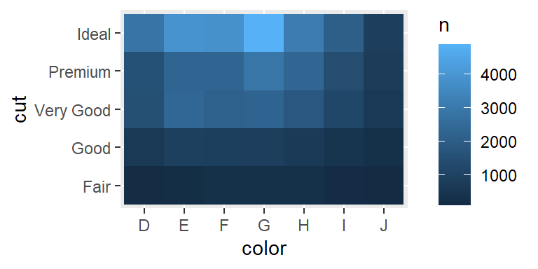
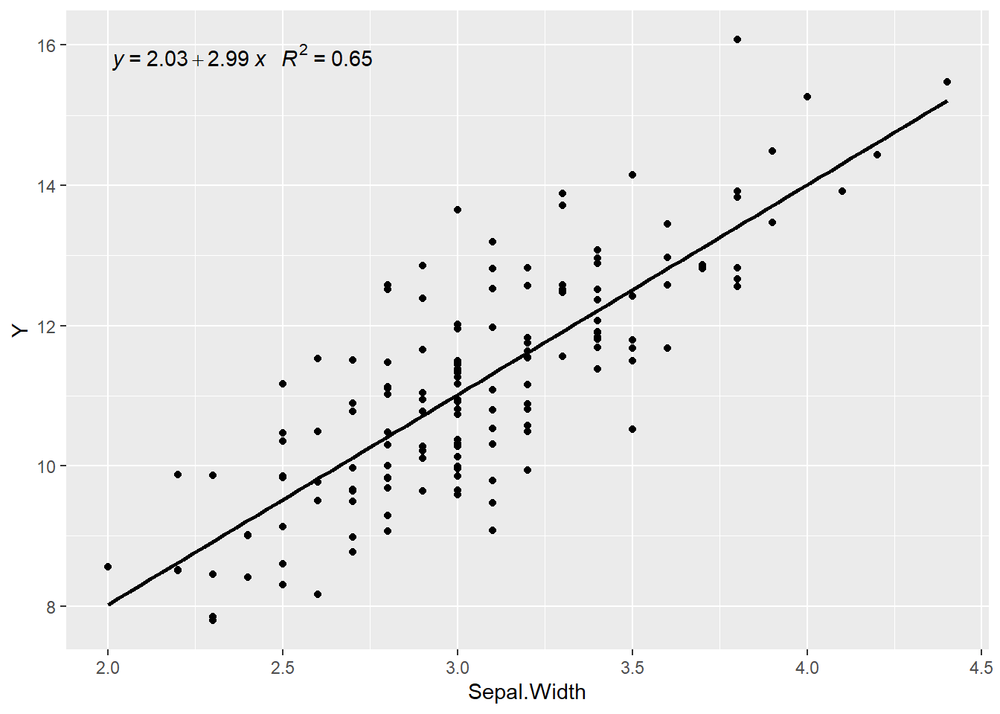

1 Introducción
To be supplied
2 Introducción a Tidyverse
2.1 Introducción

Tidyverse
tidyverse es una forma elegante de usar R y hacer de este software una herramienta mejorada. Ha sido diseñado por Hadley / Rstudio e incluye distintas librería que siguen las reglas principales del manifiesto de The tidy tools. Los autores describen esta nueva implementación como:
tidyverse es un conjunto de librerías que funcionan en armonía porque comparten representaciones de datos comunes y diseño de API. El paquete tidyverse está diseñado para facilitar la instalación y carga de los paquetes principales desde el tidyverse en un solo comando.
Existen numeros ayudas, cursos y material en general para aprender todo sobre las librerías de tidyverse, pero el autor ha usado el libro R for Data Science como base para ilustrar cómo usar este conjunto de herramientas para el análisis de datos en ciencias. Este libro (del que os he puesto el link) es una excelente fuente para aprender todo sobre tidyverse. En este capítulo os referenciaré otro material que puede ser de ayuda.
El libro de R for Data Science se organiza siguiendo este esquema:

(#fig:flujo)Esquema R for Data Science
De forma que las librerías incluidas en tidyverse cubren todos estos aspectos. Está pensado para facilitar tareas de gestión de datos, y en su caso, el manejo de grandes volúmenes de información de forma eficiente. Se describen técnicas que ayudan a la visualización de datos que es el primer paso que se debe llevar a cabo en cualquier análisis estadístico que se precie. Esta visualización y posterior análisis no sólo deber llevarse a cab o en toda la base de datos, puede requerirse analizar subconjuntos de datos obtenidos mediante algún filtro o inlcuso puede necesitarse recodificar o restructurar la información disponible . Quizás estos sean los procedimientos para los que tidiverse mejore de forma sustancial el uso de R tradicional (junto con la forma compacta y clara de escribir código), ya que la posterior modelización puede llevarse a cabo con decenas de librerías diseñadas para tal efecto.
2.2 Instalación
Para instalar el conjunto básico de liberías relacionadas con tidyverse basta con ejecutar_
Las librerías básicas relacionadas con tidyverse se cargan de la forma usual, con una única llamada
La diferencia con el hecho de cargar cualquier otra librería, es que en un sólo comando se instalan/cargan un par de docenas de paquetes. Como beneficio adicional, uno puede estar seguro de que todos los paquetes instalados / cargados son de versiones compatibles.
2.3 Librerías básicas
Las librerías que son más conocidas y ampliamente utilizadas en
tidyverseson:- ggplot2: visualización avanzada de datos
- dplyr: manipulación de datos de forma eficiente y escalable (usa Rcpp)
- tidyr: funciones para ordenar datos
- readr: importa datos.
- purrr: desarrolla una especie de “dialecto” de R que facilita muchas operaciones (map, Reduce, …)
- tibble: forma moderna para conceptualizar los datos.
- magrittr: canalización para hacer el código más legible (uso del “pipe” %>%)
Paquetes para manipular formatos de datos específicos:
- hms: leer fácilmente fechas y tiempos
- stringr: funciones para trabajar de forma sencilla con cadenas de carácteres
- Lubridate: Manipulación avanzada de fechas
- Forcats: funciones avanzadas con factores
Importar datos:
- DBI: define una interfaz común entre R y los sistemas de administración de bases de datos (DBMS)
- haven: importar archivos SPSS, SAS y Stata de forma sencilla
- httr: facilitar el uso del paquete curl personalizado las necesidades de las API web modernas
- jsonlite: análisis y generación de JSON rápido y optimizado para obtener estadísticas en la web
- readxl: leer archivos read.xls y .xlsx de forma sencilla y sin necesitar otras dependencias
- rvest: obtener información de páginas web
- xml2: trabajar con XML
Modelización: Existen varias librerías, pero yo prefiero usar las de R y/o Bioconductor
2.4 Manejo de datos
En tidyverse, los data.frames se trabajan como tibbles. Esto permite disponer de una forma consistente y eficiente de guardar nuestros datos permitiendo una forma sencilla de hacer transformaciones, visualización y modelización. Esta sección pretende ser una introducción básica a tidyverse por lo que sólo veremos cómo llevar a cabo los principales tipos de manipulación de datos. No obstante, también existen funciones específicas para:
- Relacionar múltiples tablas ver ejemplos.
- Trabajar con variables carácter
- Usar factores para variables categóricas de forma sencilla (sin los problemas de orden de categorías)
- Realizar operaciones con variables de tipo fecha ver ejemplos.
2.4.1 Tibbles
Empecemos introduciendo lo que es un tibble (pronunciado “tibel”). Se puede aprender más cosas ejecutando vignette("tibble") en la consola de RStudio. Tras cargar la librería tidyverse podemos crear un tibble a partir de un data.frame de la siguiente forma. Usaremos la base de datos iris a modo de ejemplo
## Sepal.Length Sepal.Width Petal.Length Petal.Width Species Y
## 1 5.1 3.5 1.4 0.2 setosa 11.492934
## 2 4.9 3.0 1.4 0.2 setosa 11.377429
## 3 4.7 3.2 1.3 0.2 setosa 12.824441
## 4 4.6 3.1 1.5 0.2 setosa 9.074302
## 5 5.0 3.6 1.4 0.2 setosa 13.449125
## 6 5.4 3.9 1.7 0.4 setosa 14.486056## # A tibble: 150 x 6
## Sepal.Length Sepal.Width Petal.Length Petal.Width Species Y
## <dbl> <dbl> <dbl> <dbl> <fct> <dbl>
## 1 5.1 3.5 1.4 0.2 setosa 11.5
## 2 4.9 3 1.4 0.2 setosa 11.4
## 3 4.7 3.2 1.3 0.2 setosa 12.8
## 4 4.6 3.1 1.5 0.2 setosa 9.07
## 5 5 3.6 1.4 0.2 setosa 13.4
## 6 5.4 3.9 1.7 0.4 setosa 14.5
## 7 4.6 3.4 1.4 0.3 setosa 11.8
## 8 5 3.4 1.5 0.2 setosa 11.8
## 9 4.4 2.9 1.4 0.2 setosa 10.2
## 10 4.9 3.1 1.5 0.1 setosa 10.5
## # ... with 140 more rowsTambién podemos crear un nuevo tibble mediante (los datos se reciclan):
## # A tibble: 5 x 3
## x y z
## <int> <dbl> <dbl>
## 1 1 1 2
## 2 2 1 5
## 3 3 1 10
## 4 4 1 17
## 5 5 1 26NOTA 1: Nunca cambia los tipos de datos! (i.e. caracter a factor)
NOTA 2: El rownames desaparece
Quizás uno de los aspectos más novedosos de las tibble sea que se ha re-definido el método print() que permite, por defecto, ver las 10 primeras filas y todas las columnas que quepan en la pantalla. Esto puede cambiarse con
## # A tibble: 150 x 6
## Sepal.Length Sepal.Width Petal.Length Petal.Width Species Y
## <dbl> <dbl> <dbl> <dbl> <fct> <dbl>
## 1 5.1 3.5 1.4 0.2 setosa 11.5
## 2 4.9 3 1.4 0.2 setosa 11.4
## 3 4.7 3.2 1.3 0.2 setosa 12.8
## 4 4.6 3.1 1.5 0.2 setosa 9.07
## 5 5 3.6 1.4 0.2 setosa 13.4
## 6 5.4 3.9 1.7 0.4 setosa 14.5
## 7 4.6 3.4 1.4 0.3 setosa 11.8
## 8 5 3.4 1.5 0.2 setosa 11.8
## 9 4.4 2.9 1.4 0.2 setosa 10.2
## 10 4.9 3.1 1.5 0.1 setosa 10.5
## # ... with 140 more rowsó
## # A tibble: 150 x 6
## Sepal.Length
## <dbl>
## 1 5.1
## 2 4.9
## 3 4.7
## 4 4.6
## 5 5
## 6 5.4
## 7 4.6
## 8 5
## 9 4.4
## 10 4.9
## # ... with 140 more
## # rows, and 5 more
## # variables:
## # Sepal.Width <dbl>,
## # Petal.Length <dbl>,
## # Petal.Width <dbl>,
## # Species <fct>,
## # Y <dbl>Podemos acceder a una columna (e.g. variable) de la misma forma que con un data.frame
## [1] 0.11263386 0.99747715 0.05467677 0.36455551 0.07494088## [1] 0.11263386 0.99747715 0.05467677 0.36455551 0.07494088## [1] 0.11263386 0.99747715 0.05467677 0.36455551 0.074940882.4.2 Importar datos
El paquete clave para leer datos es readr
read_csv () lee archivos delimitados por comas, read_csv2 () lee archivos separados por punto y coma (común en países donde, se usa como el lugar decimal), read_tsv () lee archivos delimitados por tabulaciones y read_delim () lee archivos con cualquier delimitador.
read_fwf () lee archivos de ancho fijo. Se puede especificar campos por sus anchos con fwf_widths () o su posición con fwf_positions (). read_table () lee archivos de ancho fijo donde las columnas están separadas por espacios en blanco.
read_log () lee archivos de registro de estilo Apache (servidor web de código abierto). Pero también es muy útil webreadr, que está construido sobre read_log () y proporciona muchas más herramientas útiles.
Estas funciones suelen ser mucho más rápidas (~ 10x) que sus equivalentes en R básico. Además, la importación de datos de ejecución prolongada tienen una barra de progreso para que se pueda ver lo que está sucediendo. Si se está buscando velocidad bruta, también podemos usar data.table::fread() que aunque no encaja tan bien en tidyverse puede usarse en ocasiones donde precie la velocidad (pero no es mucho más rápido). Los datos se importan como objetos que:
- son *tibbles
- no convierten vectores de caracteres en factores
- no usan nombres de filas ni modifican los nombres de columnas. Éstas son fuentes comunes de frustración con las funciones base R [¡declaración de Hadley!].
- Son más reproducibles. Las funciones de Base R heredan algún comportamiento de su sistema operativo y variables de entorno, por lo que el código para importar datos que funciona en un ordenador, podría no funcionar en el de otra persona.
Hagamos una comparación con un archivo grande
## user system elapsed
## 2.32 0.03 2.36## user system elapsed
## 0.39 0.03 0.42## [1] 733202 5Efectivamente ambos objetos contienen la misma información
## Name Chr Position Log.R.Ratio B.Allele.Freq
## 1 rs1000000 12 125456933 -0.002501764 1.000000000
## 2 rs1000002 3 185118461 -0.029741180 0.000336171
## 3 rs10000023 4 95952928 0.004015533 0.460671800
## 4 rs1000003 3 99825597 -0.142527700 0.541123600
## 5 rs10000030 4 103593179 0.365104000 1.000000000
## 6 rs10000037 4 38600725 -0.005177616 0.504625300## # A tibble: 733,202 x 5
## Name Chr Position Log.R.Ratio B.Allele.Freq
## <chr> <chr> <dbl> <dbl> <dbl>
## 1 rs1000000 12 125456933 -0.00250 1
## 2 rs1000002 3 185118461 -0.0297 0.000336
## 3 rs10000023 4 95952928 0.00402 0.461
## 4 rs1000003 3 99825597 -0.143 0.541
## 5 rs10000030 4 103593179 0.365 1
## 6 rs10000037 4 38600725 -0.00518 0.505
## 7 rs10000041 4 165841405 -0.179 0
## 8 rs10000042 4 5288053 0.168 0.998
## 9 rs10000049 4 119167668 -0.00238 0
## 10 rs1000007 2 237416793 -0.00411 0
## # ... with 733,192 more rows2.4.3 Transformación de datos
Antes de empezar a analizar los datos suele ser necesario realizar algunas transformaciones o crear nuevas variables ya que:
- Es raro que obtengamos los datos exactamente en la forma correcta que necesitamos.
- A menudo, se deberán crear algunas variables o resúmenes nuevos.
- A veces se necesita cambiar el nombre de las variables o reordenar las observaciones para que sea un poco más fácil trabajar con los datos.
Ilustremos cómo realizar estas tareas utilizando los datos disponibles en una base de datos de vuelos de NYC. El objeto nycflights13::fligths contiene los 336,776 vuelos que partieron de la ciudad de Nueva York en 2013. Los datos provienen de la Oficina de Estadísticas de Transporte de EE. UU. y están documentados en ?flights.
## # A tibble: 336,776 x 19
## year month day dep_time sched_dep_time dep_delay arr_time sched_arr_time arr_delay carrier flight tailnum origin dest air_time
## <int> <int> <int> <int> <int> <dbl> <int> <int> <dbl> <chr> <int> <chr> <chr> <chr> <dbl>
## 1 2013 1 1 517 515 2 830 819 11 UA 1545 N14228 EWR IAH 227
## 2 2013 1 1 533 529 4 850 830 20 UA 1714 N24211 LGA IAH 227
## 3 2013 1 1 542 540 2 923 850 33 AA 1141 N619AA JFK MIA 160
## 4 2013 1 1 544 545 -1 1004 1022 -18 B6 725 N804JB JFK BQN 183
## 5 2013 1 1 554 600 -6 812 837 -25 DL 461 N668DN LGA ATL 116
## 6 2013 1 1 554 558 -4 740 728 12 UA 1696 N39463 EWR ORD 150
## 7 2013 1 1 555 600 -5 913 854 19 B6 507 N516JB EWR FLL 158
## 8 2013 1 1 557 600 -3 709 723 -14 EV 5708 N829AS LGA IAD 53
## 9 2013 1 1 557 600 -3 838 846 -8 B6 79 N593JB JFK MCO 140
## 10 2013 1 1 558 600 -2 753 745 8 AA 301 N3ALAA LGA ORD 138
## # ... with 336,766 more rows, and 4 more variables: distance <dbl>, hour <dbl>, minute <dbl>, time_hour <dttm>Las funciones básicas que usaremos están disponibles en la librería dlpyr y son las siguientes:
Pick observations by their values:
filter().Reorder the rows:
arrange().Pick variables by their names:
select().Create new variables with functions of existing variables:
mutate().Collapse many values down to a single summary:
summarise().Elegir observaciones por sus valores:
filter().Reordenar las filas:
arrange().Elegir las variables por sus nombres:
select().Crear nuevas variables a partir de variables existentes:
mutate().Colapsar valores en un sólo resumen:
summarise().
Todos los verbos (e.g funciones) se usan de la misma forma:
El primer argumento es un tibble o un data.frame.
Los argumentos siguientes describen qué hacer con los datos, utilizando los nombres de las variables (sin comillas).
El resultado es un nuevo tibble.
2.4.4 Filtrar filas
R imprime los resultados o los guarda en una variable. Si desea hacer ambas cosas, podemos envolver la sintaxis entre paréntesis:
## # A tibble: 842 x 19
## year month day dep_time sched_dep_time dep_delay arr_time sched_arr_time arr_delay carrier flight tailnum origin dest air_time
## <int> <int> <int> <int> <int> <dbl> <int> <int> <dbl> <chr> <int> <chr> <chr> <chr> <dbl>
## 1 2013 1 1 517 515 2 830 819 11 UA 1545 N14228 EWR IAH 227
## 2 2013 1 1 533 529 4 850 830 20 UA 1714 N24211 LGA IAH 227
## 3 2013 1 1 542 540 2 923 850 33 AA 1141 N619AA JFK MIA 160
## 4 2013 1 1 544 545 -1 1004 1022 -18 B6 725 N804JB JFK BQN 183
## 5 2013 1 1 554 600 -6 812 837 -25 DL 461 N668DN LGA ATL 116
## 6 2013 1 1 554 558 -4 740 728 12 UA 1696 N39463 EWR ORD 150
## 7 2013 1 1 555 600 -5 913 854 19 B6 507 N516JB EWR FLL 158
## 8 2013 1 1 557 600 -3 709 723 -14 EV 5708 N829AS LGA IAD 53
## 9 2013 1 1 557 600 -3 838 846 -8 B6 79 N593JB JFK MCO 140
## 10 2013 1 1 558 600 -2 753 745 8 AA 301 N3ALAA LGA ORD 138
## # ... with 832 more rows, and 4 more variables: distance <dbl>, hour <dbl>, minute <dbl>, time_hour <dttm>2.4.5 Filtrado lógico
Estos son los operadoles lógicos que podemos aplicar
boolean operations
## # A tibble: 55,403 x 19
## year month day dep_time sched_dep_time dep_delay arr_time sched_arr_time arr_delay carrier flight tailnum origin dest air_time
## <int> <int> <int> <int> <int> <dbl> <int> <int> <dbl> <chr> <int> <chr> <chr> <chr> <dbl>
## 1 2013 11 1 5 2359 6 352 345 7 B6 745 N568JB JFK PSE 205
## 2 2013 11 1 35 2250 105 123 2356 87 B6 1816 N353JB JFK SYR 36
## 3 2013 11 1 455 500 -5 641 651 -10 US 1895 N192UW EWR CLT 88
## 4 2013 11 1 539 545 -6 856 827 29 UA 1714 N38727 LGA IAH 229
## 5 2013 11 1 542 545 -3 831 855 -24 AA 2243 N5CLAA JFK MIA 147
## 6 2013 11 1 549 600 -11 912 923 -11 UA 303 N595UA JFK SFO 359
## 7 2013 11 1 550 600 -10 705 659 6 US 2167 N748UW LGA DCA 57
## 8 2013 11 1 554 600 -6 659 701 -2 US 2134 N742PS LGA BOS 40
## 9 2013 11 1 554 600 -6 826 827 -1 DL 563 N912DE LGA ATL 126
## 10 2013 11 1 554 600 -6 749 751 -2 DL 731 N315NB LGA DTW 93
## # ... with 55,393 more rows, and 4 more variables: distance <dbl>, hour <dbl>, minute <dbl>, time_hour <dttm>## # A tibble: 316,050 x 19
## year month day dep_time sched_dep_time dep_delay arr_time sched_arr_time arr_delay carrier flight tailnum origin dest air_time
## <int> <int> <int> <int> <int> <dbl> <int> <int> <dbl> <chr> <int> <chr> <chr> <chr> <dbl>
## 1 2013 1 1 517 515 2 830 819 11 UA 1545 N14228 EWR IAH 227
## 2 2013 1 1 533 529 4 850 830 20 UA 1714 N24211 LGA IAH 227
## 3 2013 1 1 542 540 2 923 850 33 AA 1141 N619AA JFK MIA 160
## 4 2013 1 1 544 545 -1 1004 1022 -18 B6 725 N804JB JFK BQN 183
## 5 2013 1 1 554 600 -6 812 837 -25 DL 461 N668DN LGA ATL 116
## 6 2013 1 1 554 558 -4 740 728 12 UA 1696 N39463 EWR ORD 150
## 7 2013 1 1 555 600 -5 913 854 19 B6 507 N516JB EWR FLL 158
## 8 2013 1 1 557 600 -3 709 723 -14 EV 5708 N829AS LGA IAD 53
## 9 2013 1 1 557 600 -3 838 846 -8 B6 79 N593JB JFK MCO 140
## 10 2013 1 1 558 600 -2 753 745 8 AA 301 N3ALAA LGA ORD 138
## # ... with 316,040 more rows, and 4 more variables: distance <dbl>, hour <dbl>, minute <dbl>, time_hour <dttm>2.4.6 Ordenar filas
En orden ascendente
## # A tibble: 336,776 x 19
## year month day dep_time sched_dep_time dep_delay arr_time sched_arr_time arr_delay carrier flight tailnum origin dest air_time
## <int> <int> <int> <int> <int> <dbl> <int> <int> <dbl> <chr> <int> <chr> <chr> <chr> <dbl>
## 1 2013 1 1 517 515 2 830 819 11 UA 1545 N14228 EWR IAH 227
## 2 2013 1 1 533 529 4 850 830 20 UA 1714 N24211 LGA IAH 227
## 3 2013 1 1 542 540 2 923 850 33 AA 1141 N619AA JFK MIA 160
## 4 2013 1 1 544 545 -1 1004 1022 -18 B6 725 N804JB JFK BQN 183
## 5 2013 1 1 554 600 -6 812 837 -25 DL 461 N668DN LGA ATL 116
## 6 2013 1 1 554 558 -4 740 728 12 UA 1696 N39463 EWR ORD 150
## 7 2013 1 1 555 600 -5 913 854 19 B6 507 N516JB EWR FLL 158
## 8 2013 1 1 557 600 -3 709 723 -14 EV 5708 N829AS LGA IAD 53
## 9 2013 1 1 557 600 -3 838 846 -8 B6 79 N593JB JFK MCO 140
## 10 2013 1 1 558 600 -2 753 745 8 AA 301 N3ALAA LGA ORD 138
## # ... with 336,766 more rows, and 4 more variables: distance <dbl>, hour <dbl>, minute <dbl>, time_hour <dttm>y descendente
## # A tibble: 336,776 x 19
## year month day dep_time sched_dep_time dep_delay arr_time sched_arr_time arr_delay carrier flight tailnum origin dest air_time
## <int> <int> <int> <int> <int> <dbl> <int> <int> <dbl> <chr> <int> <chr> <chr> <chr> <dbl>
## 1 2013 1 9 641 900 1301 1242 1530 1272 HA 51 N384HA JFK HNL 640
## 2 2013 6 15 1432 1935 1137 1607 2120 1127 MQ 3535 N504MQ JFK CMH 74
## 3 2013 1 10 1121 1635 1126 1239 1810 1109 MQ 3695 N517MQ EWR ORD 111
## 4 2013 9 20 1139 1845 1014 1457 2210 1007 AA 177 N338AA JFK SFO 354
## 5 2013 7 22 845 1600 1005 1044 1815 989 MQ 3075 N665MQ JFK CVG 96
## 6 2013 4 10 1100 1900 960 1342 2211 931 DL 2391 N959DL JFK TPA 139
## 7 2013 3 17 2321 810 911 135 1020 915 DL 2119 N927DA LGA MSP 167
## 8 2013 6 27 959 1900 899 1236 2226 850 DL 2007 N3762Y JFK PDX 313
## 9 2013 7 22 2257 759 898 121 1026 895 DL 2047 N6716C LGA ATL 109
## 10 2013 12 5 756 1700 896 1058 2020 878 AA 172 N5DMAA EWR MIA 149
## # ... with 336,766 more rows, and 4 more variables: distance <dbl>, hour <dbl>, minute <dbl>, time_hour <dttm>NOTA: los valores missing están situados al final
2.4.7 Seleccionar columnas (e.g. variables)
Seleccionamos las columnas que queremos
## # A tibble: 336,776 x 3
## year month day
## <int> <int> <int>
## 1 2013 1 1
## 2 2013 1 1
## 3 2013 1 1
## 4 2013 1 1
## 5 2013 1 1
## 6 2013 1 1
## 7 2013 1 1
## 8 2013 1 1
## 9 2013 1 1
## 10 2013 1 1
## # ... with 336,766 more rowso las que están entre dos columnas
## # A tibble: 336,776 x 3
## year month day
## <int> <int> <int>
## 1 2013 1 1
## 2 2013 1 1
## 3 2013 1 1
## 4 2013 1 1
## 5 2013 1 1
## 6 2013 1 1
## 7 2013 1 1
## 8 2013 1 1
## 9 2013 1 1
## 10 2013 1 1
## # ... with 336,766 more rowstambién podemos seleccionar todas las columnas menos algunas
## # A tibble: 336,776 x 16
## dep_time sched_dep_time dep_delay arr_time sched_arr_time arr_delay carrier flight tailnum origin dest air_time distance hour minute
## <int> <int> <dbl> <int> <int> <dbl> <chr> <int> <chr> <chr> <chr> <dbl> <dbl> <dbl> <dbl>
## 1 517 515 2 830 819 11 UA 1545 N14228 EWR IAH 227 1400 5 15
## 2 533 529 4 850 830 20 UA 1714 N24211 LGA IAH 227 1416 5 29
## 3 542 540 2 923 850 33 AA 1141 N619AA JFK MIA 160 1089 5 40
## 4 544 545 -1 1004 1022 -18 B6 725 N804JB JFK BQN 183 1576 5 45
## 5 554 600 -6 812 837 -25 DL 461 N668DN LGA ATL 116 762 6 0
## 6 554 558 -4 740 728 12 UA 1696 N39463 EWR ORD 150 719 5 58
## 7 555 600 -5 913 854 19 B6 507 N516JB EWR FLL 158 1065 6 0
## 8 557 600 -3 709 723 -14 EV 5708 N829AS LGA IAD 53 229 6 0
## 9 557 600 -3 838 846 -8 B6 79 N593JB JFK MCO 140 944 6 0
## 10 558 600 -2 753 745 8 AA 301 N3ALAA LGA ORD 138 733 6 0
## # ... with 336,766 more rows, and 1 more variable: time_hour <dttm>Existen numerosas funciones que pueden ser de mucha utilidad para hacer selecciones más complejas y rápidas dentro de la función select()
starts_with("abc"): nombres que empiezan con “abc”.ends_with("xyz"): nombres que acaban con “xyz”.contains("ijk"): nombres que contienen “ijk”.matches("(.)\\1"): selecciona variables que coinciden con una expresión regular. Se puede aprender más constrings.num_range("x", 1:3): coincide con x1, x2 and x3.
2.4.8 Añadir nuevas variables
Debemos usar la función mutate()
flights_sml <- dplyr::select(flights,
year:day,
ends_with("delay"),
distance,
air_time
)
mutate(flights_sml,
gain = dep_delay - arr_delay,
speed = distance / air_time * 60
)## # A tibble: 336,776 x 9
## year month day dep_delay arr_delay distance air_time gain speed
## <int> <int> <int> <dbl> <dbl> <dbl> <dbl> <dbl> <dbl>
## 1 2013 1 1 2 11 1400 227 -9 370.
## 2 2013 1 1 4 20 1416 227 -16 374.
## 3 2013 1 1 2 33 1089 160 -31 408.
## 4 2013 1 1 -1 -18 1576 183 17 517.
## 5 2013 1 1 -6 -25 762 116 19 394.
## 6 2013 1 1 -4 12 719 150 -16 288.
## 7 2013 1 1 -5 19 1065 158 -24 404.
## 8 2013 1 1 -3 -14 229 53 11 259.
## 9 2013 1 1 -3 -8 944 140 5 405.
## 10 2013 1 1 -2 8 733 138 -10 319.
## # ... with 336,766 more rowsSi sólo queremos mantener las nuevas variables en nuestra tabla de datos, debemos usar transmute():
transmute(flights,
gain = dep_delay - arr_delay,
hours = air_time / 60,
gain_per_hour = gain / hours
)## # A tibble: 336,776 x 3
## gain hours gain_per_hour
## <dbl> <dbl> <dbl>
## 1 -9 3.78 -2.38
## 2 -16 3.78 -4.23
## 3 -31 2.67 -11.6
## 4 17 3.05 5.57
## 5 19 1.93 9.83
## 6 -16 2.5 -6.4
## 7 -24 2.63 -9.11
## 8 11 0.883 12.5
## 9 5 2.33 2.14
## 10 -10 2.3 -4.35
## # ... with 336,766 more rows2.4.9 Grouped summaries
Podemos agrupar variables de la siguiente forma:
## # A tibble: 1 x 1
## delay
## <dbl>
## 1 12.6by_day <- group_by(flights, year, month, day)
summarise(by_day, delay = mean(dep_delay, na.rm = TRUE))## # A tibble: 365 x 4
## # Groups: year, month [12]
## year month day delay
## <int> <int> <int> <dbl>
## 1 2013 1 1 11.5
## 2 2013 1 2 13.9
## 3 2013 1 3 11.0
## 4 2013 1 4 8.95
## 5 2013 1 5 5.73
## 6 2013 1 6 7.15
## 7 2013 1 7 5.42
## 8 2013 1 8 2.55
## 9 2013 1 9 2.28
## 10 2013 1 10 2.84
## # ... with 355 more rowsTambién podemos agrupar según varios criterios
flights %>%
group_by(year, month, day) %>%
summarise(
avg_delay1 = mean(arr_delay, na.rm=TRUE),
avg_delay2 = mean(arr_delay[arr_delay > 0], na.rm=TRUE)
)## # A tibble: 365 x 5
## # Groups: year, month [12]
## year month day avg_delay1 avg_delay2
## <int> <int> <int> <dbl> <dbl>
## 1 2013 1 1 12.7 32.5
## 2 2013 1 2 12.7 32.0
## 3 2013 1 3 5.73 27.7
## 4 2013 1 4 -1.93 28.3
## 5 2013 1 5 -1.53 22.6
## 6 2013 1 6 4.24 24.4
## 7 2013 1 7 -4.95 27.8
## 8 2013 1 8 -3.23 20.8
## 9 2013 1 9 -0.264 25.6
## 10 2013 1 10 -5.90 27.3
## # ... with 355 more rowsExisten otras funciones útiles por las que nos podría interesar agrupar
count()mean()median()min()max()quantile(x, 0.25)IQR()mad()
2.5 Uso del pipe %>%
Imaginemos que queremos explorar la relación entre la distancia y el retraso promedio para cada ubicación. Los pasos para obtener esta información serían:
Agrupar los vuelos por destino.
Resumir la información calculando la distancia, el retraso promedio y el número de vuelos.
Filtrar algunos valores que introducen ruido (producen sesgo) como el aeropuerto de Honolulu, que está casi el doble de lejos que el siguiente aeropuerto más cercano.
Utilizando dplyr escribiríamos algo como esto (aún más largo en R tradicional y menos legible):
by_dest <- group_by(flights, dest)
delay <- summarise(by_dest,
count = n(),
dist = mean(distance, na.rm = TRUE),
delay = mean(arr_delay, na.rm = TRUE)
)
delay <- filter(delay, count > 20, dest != "HNL")
delay## # A tibble: 96 x 4
## dest count dist delay
## <chr> <int> <dbl> <dbl>
## 1 ABQ 254 1826 4.38
## 2 ACK 265 199 4.85
## 3 ALB 439 143 14.4
## 4 ATL 17215 757. 11.3
## 5 AUS 2439 1514. 6.02
## 6 AVL 275 584. 8.00
## 7 BDL 443 116 7.05
## 8 BGR 375 378 8.03
## 9 BHM 297 866. 16.9
## 10 BNA 6333 758. 11.8
## # ... with 86 more rowsY podríamos tener un gráfico de la siguiente forma (veremos cómo hacer esto en la siguiente sesión)
ggplot(data = delay, mapping = aes(x = dist, y = delay)) +
geom_point(aes(size = count), alpha = 1/3) +
geom_smooth(se = FALSE)
Utilizando pipes el código quedaría mucho más compacto y legible
delays <- flights %>%
group_by(dest) %>%
summarise(
count = n(),
dist = mean(distance, na.rm = TRUE),
delay = mean(arr_delay, na.rm = TRUE)
) %>%
filter(count > 20, dest != "HNL")
delays## # A tibble: 96 x 4
## dest count dist delay
## <chr> <int> <dbl> <dbl>
## 1 ABQ 254 1826 4.38
## 2 ACK 265 199 4.85
## 3 ALB 439 143 14.4
## 4 ATL 17215 757. 11.3
## 5 AUS 2439 1514. 6.02
## 6 AVL 275 584. 8.00
## 7 BDL 443 116 7.05
## 8 BGR 375 378 8.03
## 9 BHM 297 866. 16.9
## 10 BNA 6333 758. 11.8
## # ... with 86 more rows2.6 Ejercicios (manejo de datos)
Los siguientes ejercicios os ayudarán a trabajar con las tareas más básicas de dplyr. Debéis realizarlos usando las funciones que hemos visto en esta presentación - no vale usar código R básico. Usaremos los datos mtcars vistos en clase. Recordad que podemos obtener más información sobre las variables con ?mtcars. También podemos usar glimpse() para ver qué tipo de variables tenemos, y en caso de ser variables categóricas, qué categorías hay (Siempre es muy recomendable hacer este tipo de visualización de datos para ver que no hayan valores raros ni categorías no definidas o errores en la definición de categorías - por ejemplo tener la variable sexo como: H, M, h, m, hombre).
Visualiza la variable ‘hp’ usando la función
select(). Intenta usar la funciónpull()para hacer lo mismo y ver cuál es la diferencia.Visualiza todos los datos excepto la columna ‘hp’.
Visualiza las columnas mpg, hp, vs, am y gear escribiendo el código más corto posible.
Crea un objeto que se llame ‘mycars’ que contenga las columnas mpg y hp pero que el nombre de la variable sea ‘miles_per_gallon’ y ‘horse_power’ respectivamente. Pon los rownames del data.frame en una variable que se llame ‘model’ [PISTA: debes buscar qué función hay para poner los rownames en una columna].
Crea una nueva variable en ‘mycars’ que sea ‘km_per_litre’ que describa el consumo del coche (variable ‘mpg’). NOTA: 1 mpg es 0.425 km / l.
Selecciona al azar (y visualiza) la mitad de las observaciones de ‘mycars’ [PISTA: busca una función de
dplyrque haga esto de forma sencilla (similar asampleen R tradicional).Crea un objeto ‘mycars_s’ que contenga de la 10ª a la 35ª fila de mycars [PISTA: considera usar la función
slice()].Visualiza el objeto ‘mycars_s’ sin duplicados [PISTA_ encia: considera usar la función
distinct()].Visualiza del objeto ‘mycars_s’ todas las observaciones que tengan mpg> 20 y hp> 100.
Visualiza la la fila correspondiente al coche Lotus Europa.
2.7 Visualización de datos
R es una herramienta muy potente para realizar gráficos, mucho más que otros software de análisis estadístico como SPSS, SAS o Stata. Aún así, ggplot fue desarrollado con los siguientes objetivos:
The aim of the grammar is to “bring together in a coherent way things that previously appeared unrelated and which also will provide a basis for dealing systematically with new situations” (Cox 1978). How well have we succeeded? (Wickham, 2012)
``The emphasis in ggplot2 is reducing the amount of thinking time by making it easier to go from the plot in your brain to the plot on the page." (Wickham, 2012)```
Base graphics are good for drawing pictures; ggplot2 graphics are good for understanding the data." (Wickham, 2012)
En definitiva, deberíamos usar ggplot porque:
- Es flexible
- Tenemos gran control de lo que estamos haciendo
- Crea gráficos muy bonitos (y se usan en la mayoría de revistas científicas)
- De forma más importante, hay mucha documentación sobre cómo hacer gráficos muy complicados de forma sencilla (libros, páginas web, infografrías, etc.
Aquí podéis encontrar una chuleta con las principales funciones
Cada visualización en ggplot se compone de:
plot = data + Aesthetics + geometry
- Datos (Data) que queremos representar (que serán un data frame).
- Características estéticas (aesthetic mappings) que describen cómo queremos que los datos se vean en el gráfico. Para más información podemos consultar la vignette (vignette(“ggplot2-specs”)). Como luego veremos, se introducen con la función aes() y se refieren a:
- posición (en los ejes)
- color exterior (color) y de relleno (fill)
- forma de puntos (shape)
- tipo de línea (linetype)
- tamaño (size)
- Objetos geométricos (Geom) representan lo que vemos en un gráficos (puntos, líneas, etc.). Todo gráfico tiene, como mínimo, una geometría. La geometría determina el tipo de gráfico:
- geom_point (para puntos)
- geom_lines (para lineas)
- geom_histogram (para histograma)
- geom_boxplot (para boxplot)
- geom_bar (para barras)
- geom_smooth (líneas suavizadas)
- geom_polygons (para polígonos en un mapa)
- etc. (si ejecutáis el comando help.search(“geom_”, package = “ggplot2”) podéis ver el listado de objetos geométricos)
Por tanto, para construir un gráfico con ggplot2 comenzamos con la siguiente estructura de código:
ggplot(datos, aes()) + geom_tipo()
Por ejemplo para hacer una gráfica que represente las millas por galón (mpg) en función del peso del coche, podemos hacer los siguiente:
## mpg cyl disp hp drat wt qsec vs
## Mazda RX4 21.0 6 160 110 3.90 2.620 16.46 0
## Mazda RX4 Wag 21.0 6 160 110 3.90 2.875 17.02 0
## Datsun 710 22.8 4 108 93 3.85 2.320 18.61 1
## Hornet 4 Drive 21.4 6 258 110 3.08 3.215 19.44 1
## Hornet Sportabout 18.7 8 360 175 3.15 3.440 17.02 0
Podemos cambiar a una de estas estéticas
theme_dark()theme_minimal()theme_classic()theme_void()theme_test()
ggplot(mtcars) + # data
aes(x = mpg, y=wt) + # Aesthetics
geom_point() + # geometry (layer)
theme_minimal() # theme 
o alguna geometría

A continuación ilustratemos cómo hacer los principales tipos de gráficos que necesitamos en estadística
2.7.1 Distribución de datos categóricos
## # A tibble: 53,940 x 10
## carat cut color clarity depth table price x y z
## <dbl> <ord> <ord> <ord> <dbl> <dbl> <int> <dbl> <dbl> <dbl>
## 1 0.23 Ideal E SI2 61.5 55 326 3.95 3.98 2.43
## 2 0.21 Premium E SI1 59.8 61 326 3.89 3.84 2.31
## 3 0.23 Good E VS1 56.9 65 327 4.05 4.07 2.31
## 4 0.290 Premium I VS2 62.4 58 334 4.2 4.23 2.63
## 5 0.31 Good J SI2 63.3 58 335 4.34 4.35 2.75
## 6 0.24 Very Good J VVS2 62.8 57 336 3.94 3.96 2.48
## 7 0.24 Very Good I VVS1 62.3 57 336 3.95 3.98 2.47
## 8 0.26 Very Good H SI1 61.9 55 337 4.07 4.11 2.53
## 9 0.22 Fair E VS2 65.1 61 337 3.87 3.78 2.49
## 10 0.23 Very Good H VS1 59.4 61 338 4 4.05 2.39
## # ... with 53,930 more rows## # A tibble: 5 x 2
## cut n
## <ord> <int>
## 1 Fair 1610
## 2 Good 4906
## 3 Very Good 12082
## 4 Premium 13791
## 5 Ideal 21551

2.7.2 Distribución de datos continuos

2.7.3 Distribución de datos continuos según una variable categórica
ggplot(data = diamonds, mapping = aes(x = price)) +
geom_freqpoly(mapping = aes(colour = cut), binwidth = 500)
Idealmente esta descriptiva debemos hacerla con un boxplot

Box-plot

Podemos reordenar el boxplot para facilitar la interpretación de la siguiente manera (notamos que el código es mucho más compacto y legible que en R tradicional)

Podemos cambiar las coordenadas añadiendo otra función
ggplot(data = mpg) +
geom_boxplot(mapping = aes(x = reorder(class, hwy,
FUN = median),
y = hwy)) + coord_flip()
Los gráficos se pueden reciclar y aprovechar el código ya escrito
plt <- ggplot(data = mpg) +
geom_boxplot(mapping = aes(x = reorder(class, hwy,
FUN = median),
y = hwy))
plt + coord_flip()Podemos mejorar un boxplot añadiendo más información tras ’ + ’
ggplot(iris, aes(x=Species, y=Sepal.Width) ) +
geom_boxplot(alpha=0.3, outlier.colour = "blue") +
geom_point(stat= "summary", fun.y=mean,
shape=16, size=1.5, color="red") +
geom_jitter(width = 0.1, alpha = 0.2)
2.7.4 Dos variables categóricas
Podemos resumir dos variables categóricas de esta forma

Otra aproximación sería contar cuántos hay en una categoría con dplyr:
## # A tibble: 35 x 3
## color cut n
## <ord> <ord> <int>
## 1 D Fair 163
## 2 D Good 662
## 3 D Very Good 1513
## 4 D Premium 1603
## 5 D Ideal 2834
## 6 E Fair 224
## 7 E Good 933
## 8 E Very Good 2400
## 9 E Premium 2337
## 10 E Ideal 3903
## # ... with 25 more rowsy luego visualizarlo con geom_tile() que nos daría un gráfico tipo heatmap
diamonds %>%
count(color, cut) %>%
ggplot(mapping = aes(x = color, y = cut)) +
geom_tile(mapping = aes(fill = n))
2.7.5 Dos variables continuas

Scatterplots se vuelven menos útiles cuando el tamaño del conjunto de datos aumenta porque los puntos coinciden. En ese caso podemos usar la estética alpha:

Otra opción es discretizar una de las variables continuas y usar boxplot()
ggplot(data = diamonds, mapping = aes(x = carat, y = price)) +
geom_boxplot(mapping = aes(group = cut_width(carat, 0.1)))
A veces nos interesa añadir una línea de regresión al gráfico. Exsiten numerosas librerías que extienden las facilidades de ggplot com esta:
library(ggpmisc)
set.seed(1234)
iris <- mutate(iris,
Y = 1.5 + 3.2*Sepal.Width +
rnorm(nrow(iris)))
ggplot(iris, aes(x = Sepal.Width, y = Y)) +
geom_smooth(method = "lm", se=FALSE, color="black",
formula = y ~ x) +
stat_poly_eq(formula = y ~ x,
aes(label = paste(..eq.label.., ..rr.label..,
sep = "~~~")),
parse = TRUE) +
geom_point()
R tiene unas capacidades gráficas excelentes, pero el uso de ggplot hace que éstas sean aún más espectaculares. Imaginemos que queremos comparar la expresión génica según la tasa de crecimiento en 20 genes y seis condiciones1
## # A tibble: 711 x 7
## name BP MF systematic_name nutrient rate expression
## <chr> <chr> <chr> <chr> <chr> <dbl> <dbl>
## 1 "SUL1" sulfate transport sulfate transporter activity YBR294W Glucose 0.05 -0.32
## 2 "" biological process unknown molecular function unknown YKL187C Glucose 0.05 4.13
## 3 "QDR2" multidrug transport multidrug efflux pump activity YIL121W Glucose 0.05 1.07
## 4 "LEU1" leucine biosynthesis 3-isopropylmalate dehydratase activity YGL009C Glucose 0.05 -1.12
## 5 "PHO5" phosphate metabolism* acid phosphatase activity YBR093C Glucose 0.05 2.39
## 6 "PHO12" biological process unknown acid phosphatase activity YHR215W Glucose 0.05 0.9
## 7 "PHO11" phosphate metabolism acid phosphatase activity YAR071W Glucose 0.05 1.14
## 8 "GIT1" glycerophosphodiester transport glycerophosphodiester transporter activity YCR098C Glucose 0.05 0.77
## 9 "AGP3" amino acid transport amino acid transporter activity YFL055W Glucose 0.05 0.570
## 10 "" biological process unknown molecular function unknown YOL164W Glucose 0.05 0.53
## # ... with 701 more rowsEste tendría que ser el (largo) código para hacer este gráfico usando funciones básicas de R (el aspecto del gráfico es mejorable y la sintaxis de R ilegible)
par(mar = c(1.5, 1.5, 1.5, 1.5))
colors <- 1:6
names(colors) <- unique(genes$nutrient)
m <- matrix(c(1:20, 21, 21, 21, 21), nrow = 6,
ncol = 4, byrow = TRUE)
layout(mat = m, heights = c(.18, .18, .18, .18, .18, .1))
genes$combined <- paste(genes$name, genes$systematic_name)
for (gene in unique(genes$combined)) {
sub_data <- filter(genes, combined == gene)
plot(expression ~ rate, sub_data,
col = colors[sub_data$nutrient], main = gene)
for (n in unique(sub_data$nutrient)) {
m <- lm(expression ~ rate,
filter(sub_data, nutrient == n))
if (!is.na(m$coefficients[2])) {
abline(m, col = colors[n])
}
}
}
# create a new plot for legend
plot(1, type = "n", axes = FALSE, xlab = "", ylab = "")
legend("top", names(colors), col = colors, horiz = TRUE, lwd = 4)
Sin embargo con ggplot2 bastaría con
ggplot(genes, aes(rate, expression, color = nutrient)) +
geom_point() +
geom_smooth(method = "lm", se = FALSE) +
facet_wrap(~name + systematic_name, scales = "free_y")
2.7.6 Facets
Faceting es el proceso que en el dividimos la ventana del gráfico en varias partes pequeñas (una cuadrícula) y muestra un gráfico similar en cada sección. Cada sección generalmente muestra el mismo gráfico para un grupo específico del conjunto de datos. Aquí podemos ver cómo llevar a cabo este tipo de gráficos. Utilizaremos una base de datos sobre propinas
## total_bill tip sex smoker day time size
## 1 16.99 1.01 Female No Sun Dinner 2
## 2 10.34 1.66 Male No Sun Dinner 3
## 3 21.01 3.50 Male No Sun Dinner 3
## 4 23.68 3.31 Male No Sun Dinner 2
## 5 24.59 3.61 Female No Sun Dinner 4
## 6 25.29 4.71 Male No Sun Dinner 4Imaginemos que queremos representar qué propinas se dan en función del total de la cuenta

Ahora nos puede interesar obtener el mismo gráfico para hombres y mujeres. Para ello, podemos hacer el faceting de forma vertical

u horizontal

también según dos variables

En lugar de crear los paneles con una variable en la dirección horizontal o vertical, las gráficas se pueden colocar una al lado de la otra, envolviéndose con un cierto número de columnas o filas. La etiqueta de cada figura estará en la parte superior.

Podemos cambiar todo lo que queramos. Este es sólo un ejemplo
sp + facet_grid(sex ~ day) +
theme(strip.text.x = element_text(size=8, angle=75),
strip.text.y = element_text(size=12, face="bold"),
strip.background = element_rect(colour="brown",
fill="tomato"))
En este link tenéis la referencia de ggplot2.
2.8 Ejercicios (Visualización de datos)
Visualiza el número de vuelos para cada aerolínia por mes.
Visualiza la distribución de la variabla carat según el precio en el dataset
diamonds.Carga los datos qe están en https://raw.githubusercontent.com/isglobal-brge/TeachingMaterials/master/Master_Modelling/data/genome.txt en tu sesión de RStudio utilizando la función
read_delim(NOTA: los datos están delimitados por tabulaciones - no hace falta bajarlos al ordenador se cargan desde la URL).
El archivo contiene información sobre ~730K variantes genéticas en todo el genoma:
Name: variante genómica (single nucleotide polymorphism)
Chr: cromosoma
Position: posición en el cromosoma
Log.R.Ratio: log-ratio de la intensidad de los dos alelos
B.Allele.Freq: frecuencia del alelo alternativo
- ¿Cuál es el valor esperado (media) de
Log.R.RatioyB.Allel.Freqpara cada cromosoma? (muestra el código de R que usas para obtener dicha información) - Crea un “facet plot” que represente el
Log.R.Ratiopara cada cromosoma - Crea un “facet plot” que represente el
B.Allele.Freqpara los cromosomas 1, 2, 3, …, 6 y pinta la etiquetaB.Allele.Freqen rojo.
- ¿Cuál es el valor esperado (media) de
3 Regresión lineal
Este capítulo presenta la regresión lineal, el método de regresión paramétrica que usamos cuando la variable de resultado o respuesta es continua. Cuando el resultado es binario, utilizamos la regresión logística, tema de un capítulo posterior.
Qué pretendemos aprender en este capítulo:
- Entender qué pretende y cuándo se usa la regresión lineal
- Cómo estimar los parámetros de un modelo de regresión
- Familiarizarnos con algunas medidas usadas en la regresión lineal para valorar la utilidad del modelo
- Tener una idea de otros aspectos a tener encuenta para estos modelos (suposiciones del modelo, colinealidad, valores atípicos, …)
Existen numerosos recursos en la red para complementar este curso. Aquí tenéis algunos tutoriales/cursos en Datacamp:
– [DataCamp: Correlación y regresión] (https://www.datacamp.com/courses/correlation-and-regression)
– [DataCamp: Intro to Statistics with R: Correlation and Linear Regression] (https://www.datacamp.com/courses/intro-to-statistics-with-r-correlation-and-linear-regression)
– [Intro to Statistics with R: Multiple Regression] (https://www.datacamp.com/courses/intro-to-statistics-with-r-multiple-regression)
3.1 Preliminares
¿Qué son los modelos? Los modelos simplifican la realidad con fines de comprensión o predicción. Si bien pueden ser herramientas poderosas, debemos tener en cuenta que, después de todo, no son la realidad. En consecuencia, como se dice que dijo el estadístico George Box, “Todos los modelos son incorrectos, pero algunos son útiles”.
En términos generales, el modelado estadístico tiene estos dos objetivos a veces divergentes:
Descripción: usar un modelo para describir la relación entre una variable de resultado de interés y una o más variables predictoras.
Predicción: uso de un modelo para predecir instancias desconocidas de la variable de resultado de manera que se minimice el error predictivo fuera de la muestra.
En el modelado, es posible centrarse en la descripción e ignorar la predicción, y viceversa. Por ejemplo, muchos algoritmos de aprendizaje automático son cajas negras: crean modelos que hacen un buen trabajo de predicción, pero son difíciles, si no imposibles, de interpretar y, en consecuencia, a menudo no nos ayudan a comprender las relaciones entre variables. La regresión lineal puede no ser la técnica más sofisticada, pero si se usa correctamente, su precisión predictiva compara bien con otros algoritmos más avanzados que veremos en este curso. Además, ofrece información descriptiva, en forma de coeficientes para cada variable, que son de gran utilida. La regresión lineal hace un buen trabajo con tanto descripción como predicción. En este capítulo aprenderemos estos usos de la regresión lineal.
3.2 Conceptos básicos
Comencemos por presentar brevemente el modelo lineal junto con algunos de los conceptos y terminología que usaremos a lo largo del curso.
Un modelo lineal es paramétrico porque asumimos que la relación entre dos variables es lineal y puede ser definida por los parámetros de una recta (el intercept y la pendiente). Comenzaremos considerando un modelo lineal simple. En la siguiente figura podemos observar cómo existe una relación lineal entre la dosis de chocolate consumida y el nivel de felicidad reportado por una muestra de individuos seleccionados al azar en una población de Barcelona. Los puntos negros muestran los datos observados para cada individuo y los blancos representan a la felicidad que tendría cada individuo según la dosis de chocolate que reporta tomar.

Regresión lineal simple
3.2.1 Modelo lineal simple
Un modelo lineal simple tiene un resultado (outcome, variable predictiva - en nuestro ejemplo la felicidad), \(y\), y un predictor, \(x\) (el consumo de chocolate en nuestro ejemplo). Está definido por la siguiente ecuación.
\[ y_i = \beta_0 + \beta_1x_i + \epsilon_i, \]
donde \(i = 1, \ldots, n.\)
El subíndice en esta ecuación, \(i\), indexa las observaciones \(n\) en el conjunto de datos. (Pensemos en \(i\) como un número de fila que corresponde a los datos de un individuo). La ecuación se puede leer de la siguiente manera: el valor de la \(i\)-ésima variable resultado, \(y_i\), está definido por una intercept, \(\beta_0\), más una pendiente, \(\beta_1\), multiplicada por la variable predictora \(i\)-ésima, \(x_i\). Estos elementos definen la parte sistemática o determinista del modelo. Sin embargo, debido a que el mundo es incierto y contiene aleatoriedad, sabemos que el modelo será incorrecto (estará sujeto a error). Para describir completamente los datos, necesitamos un término de error, \(\epsilon_i\), que también está indexado por fila. El término de error es la parte estocástica o aleatoria del modelo. \(\epsilon_i\) mide la distancia entre los valores ajustados o esperados del modelo — calculados a partir de la parte determinista del modelo — y los valores reales. Los errores en un modelo lineal, también conocidos como residuales del modelo, son la parte de los datos que permanece sin explicar por la parte determinista del modelo. Uno de los supuestos clave de un modelo lineal es que los residuos se distribuyen normalmente con media = 0 y varianza = \(\sigma^2\), que denotamos, en notación matricial, como \(N (0, \sigma ^ 2)\).
3.2.2 Regresión lineal multivariante
Podemos agregar predictores adicionales, \(p\), a un modelo lineal simple, convirtiéndolo en un modelo lineal multivariante, que definimos de la siguiente manera:
\[ y_i = \beta_0 + \beta_1 x_ {i1} + \cdots + \beta_p x_ {ip} + \varepsilon_i, \]
donde \(i = 1, \ldots, n\) y \(p = 1, \ldots, p.\) En esta ecuación \(y_i\) es nuevamente la variable resultado \(i\)-ésima, \(\beta_0\) es la intercept, \(\beta_1\) es el coeficiente de la primera variable predictora, \(x_{1}\), \(\beta_p\) es el coeficiente de la variable predictora \(p\)-ésima, \(x_{p}\), y \(\epsilon_i\) representa la parte estocástica del modelo, los residuos, indexados por fila. La parte determinista del modelo se puede resumir como \(X \beta\), una matriz \(p\) x \(n\), que llamaremos el “predictor lineal”.
3.2.3 Incertidumbre
La incertidumbre es intrínseca al modelado estadístico. Distinguimos entre Incertidumbre de estimación e Incertidumbre fundamental :
La incertidumbre de la estimación se deriva del desconocimiento de los parámetros \(\beta\). Disminuye a medida que \(n\) aumenta y los \(SE\)s se reducen.
La incertidumbre fundamental se deriva del componente estocástico del modelo, \(\epsilon\). Existe sin importar lo que haga el investigador, sin importar como de grande sea el tamaño muestral \(n\). Podemos reducir la incertidumbre fundamental con predictores elegidos inteligentemente, pero nunca podremos eliminarla.
3.3 Ajuste de un modelo lineal
Para ajustar un modelo lineal usamos la función lm(). (La función glm() también se ajusta a un modelo lineal por defecto, definido por family = gaussian. También usaremosglm() para ajustar una regresión logística, confamily = binomial). Por ejemplo, usemos el conjunto de dataos mtcars para averiguar si el consumo de combustible (mpg) está correlacionado con el peso del coche (wt). En R deberíamos ejecutar:
##
## Call:
## lm(formula = mpg ~ wt, data = mtcars)
##
## Coefficients:
## (Intercept) wt
## 37.285 -5.344La ecuación del modelo es: \(\widehat {mpg} = 37.285 - 5.344wt\). (La notación del sombrero, \(\widehat {mpg}\), significa “estimación de”). Sin embargo, con el término de error incluido, ya no estamos estimando mpg sino describiéndolo exactamente: \(mpg = 37.285 - 5.344wt + error\) (Por lo tanto, no hay notación de sombrero). Los componentes del modelo se pueden extraer del objeto del modelo usando adjust(), o, de manera equivalente en este caso, predict() y residuals():
mtcars_new <- mtcars %>%
mutate(cars = rownames(mtcars),
fitted = fitted(simple_model),
residuals = residuals(simple_model)) %>%
dplyr::select(cars, mpg, wt, fitted, residuals)
head(mtcars_new)## cars mpg wt fitted residuals
## 1 Mazda RX4 21.0 2.620 23.28261 -2.2826106
## 2 Mazda RX4 Wag 21.0 2.875 21.91977 -0.9197704
## 3 Datsun 710 22.8 2.320 24.88595 -2.0859521
## 4 Hornet 4 Drive 21.4 3.215 20.10265 1.2973499
## 5 Hornet Sportabout 18.7 3.440 18.90014 -0.2001440
## 6 Valiant 18.1 3.460 18.79325 -0.6932545El modelo se puede utilizar para calcular valores ajustados para coches individuales en el conjunto de datos. Por ejemplo, el valor ajustado para el Mazda RX4, \(\widehat {mpg_1}\), se puede derivar de la ecuación del modelo, \(\beta_0 + \beta_1 x_ {i1}\): 37.29 - 5.34 x 2.62 = 23.28. (El valor real del Mazda RX4, calculado a partir del modelo, sería: 37.29 - 5.34 x 2.62 + 2.28 = 21). El modelo también se puede utilizar para la predicción. ¿Cuál sería el mpg para un coche que pesa 5000 libras? Según el modelo: 37,29 - 5,34 x 5 = 10.56.
3.3.1 Residuos
Los residuales del modelo — representados por los segmentos de línea vertical en el gráfico siguiente — son las diferencias entre los valores ajustados y reales de mpg.
ggplot(mtcars_new, aes(x = wt, y = mpg)) +
geom_smooth(method = "lm", se = FALSE, color = "lightgrey") +
geom_segment(aes(xend = wt, yend = fitted), alpha = .2) +
geom_point() +
geom_point(aes(y = fitted), shape = 1) +
ggtitle("Residuales del modelo para mpg ~ wt")
Podemos resumir los residuos con una medida llamada suma de cuadrados residual (RSS), que se calcula restando los resultados reales, \(y_i\), de los valores ajustados, \(\hat {y} _i\), elevando al cuadrado esas diferencias, luego sumando los cuadrados.
\[ \operatorname {RSS} = \sum_ {i = 1} ^ n ((\beta_0 + \beta_1x_i) - y_i) ^ 2 = \sum_{i = 1}^n(\hat {y} _i - y_i) ^ 2 \]
Al resumir los errores del modelo, RSS nos permite cuantificar el rendimiento del modelo con un solo número:
## [1] 278.32193.3.2 Coeficientes de interpretación
¿Cómo interpretamos la salida de la función lm()? Comencemos con el modelo simple de mpg.
- intercept: 37.29 representa el valor predicho de mpg cuando wt es 0. Dado que wt no puede ser igual a 0. El intercept no es interpretable en este modelo. Para hacerlo interpretable, necesitamos centrar la variable wt en 0, lo que podemos hacer fácilmente restando la media de wt de cada observación (\(x_ {centrado} = x - \ bar {x}\)). Esta es una transformación lineal que cambiará la escala del predictor y, por lo tanto, \(\beta_0\) también, pero no el ajuste del modelo: \(\beta_1\) permanecerá igual (-5,34) al igual que RSS (278,32). Después de la transformación, el peso promedio del coche es 0 y el intercept representa las millas por galón pronosticadas para coches de peso promedio.
mtcars$wt_centered <- mtcars$wt - mean(mtcars$wt)
(simple_model <- lm(mpg ~ wt_centered, data = mtcars))##
## Call:
## lm(formula = mpg ~ wt_centered, data = mtcars)
##
## Coefficients:
## (Intercept) wt_centered
## 20.091 -5.344## [1] 278.3219Ahora el intercept, 20.09, es significativa y representa el valor predicho de mpg cuando wt_centered es 0 — es decir, cuando wt es promedio.
Hay dos formas de interpretar los coeficientes en un modelo lineal:
Contrafactual: el coeficiente representa el cambio predicho en el resultado asociado con un aumento de 1 unidad en el predictor, mientras se mantienen constantes los demás predictores (en el caso multivariable).
Predictivo: el coeficiente representa la diferencia pronosticada en el resultado entre dos grupos que difieren en 1 unidad en el predictor, mientras se mantienen constantes los otros predictores.
Normalmente los coeficientes del modelo se suelen interpretar de acuerdo con el paradigma contrafáctico. Por lo tanto,
- wt_centered: -5.34 representa el cambio previsto en el resultado, mpg, asociado con un aumento de 1 unidad en wt_centered.
Agreguemos un segundo predictor al modelo, una versión binaria de caballos de fuerza (hp_bin), que definiremos como 0 para valores de hp que están por debajo del promedio y 1 para valores mayores o iguales que el promedio.
mtcars$hp_bin <- ifelse(mtcars$hp < mean(mtcars$hp), 0, 1)
(multivariable_model <- lm(mpg ~ wt_centered + hp_bin , data = mtcars))##
## Call:
## lm(formula = mpg ~ wt_centered + hp_bin, data = mtcars)
##
## Coefficients:
## (Intercept) wt_centered hp_bin
## 21.649 -4.168 -3.324## [1] 231.3121Este modelo multivariante es una mejora con respecto al modelo simple ya que tiene un RSS menor.
intercept: 21,65 representa el mpg predicho cuando los predictores continuos o binarios son iguales a 0 o (no aplicable en este caso) cuando las variables de los factores están en su nivel de referencia. El intercept es el mpg pronosticado por el modelo para autos de peso promedio que tienen caballos de fuerza por debajo del promedio.
wt_centered: -4,17 representa el cambio previsto en mpg asociado con un aumento de 1 unidad en wt_centered (digamos, de 1 a 2) mientras se mantiene constante el otro predictor, hp_bin. Los coeficientes de regresión multivariable capturan cómo el resultado varía de manera única con un predictor dado, después de tener en cuenta los efectos de todos los demás predictores. En la práctica, esto significa que el coeficiente que describe la relación entre mpg y wt_centrado se ha promediado en los niveles hp_bin, por lo que es igual en cada nivel de hp_bin.
hp_bin: -3.32 representa el cambio previsto en mpg asociado con un aumento de 1 unidad en hp_bin (de 0 a 1) mientras se mantiene constante el otro predictor, wt_centered.
3.3.3 Interacciones
Podemos agregar una interacción a este modelo. A menudo, la relación entre un predictor y un resultado puede depender del nivel de otra variable predictiva. Por ejemplo, la pendiente de la recta de regresión que define la relación entre wt_centrado y mpg puede variar con los niveles de hp_bin. Si es así, decimos que existe una interacción entre wt_centered y hp_bin al predecir mpg. Para incluir una interacción entre dos variables en la fórmula del modelo, simplemente reemplazamos “+” por “*” en la fórmula del modelo. Esta fórmula, mpg ~ wt_centered * hp_bin, es exactamente equivalente a mpg ~ wt_centered + wt_centered * hp_bin, o a mpg ~ wt_centered + hp_bin + wt_centered*hp_bin ya que lm () agrega automáticamente el efecto principal junto con la interacción. También se puede usar “:” para el término exacto de la interacción `mpg ~ wt_centered + hp_bin + wt_centered:hp_bin. Por “efecto principal” nos referimos a los términos que interactúan entre si. En este modelo, el efecto de interacción es wt_centered:hp_bin, mientras que wt_centered y hp_bin por sí mismos son los efectos principales.
##
## Call:
## lm(formula = mpg ~ wt_centered * hp_bin, data = mtcars)
##
## Coefficients:
## (Intercept) wt_centered hp_bin wt_centered:hp_bin
## 20.276 -6.391 -3.163 3.953## [1] 170.3792RSS mejora una vez más.
Las interacciones pueden ser difíciles de interpretar es por ello que la visualización ayuda a comprender qué está sucediendo.
ggplot(mtcars, aes(wt_centered, mpg, col = factor(hp_bin), group = factor(hp_bin))) +
geom_point() +
stat_smooth(method="lm", se = F) +
ggtitle("mpg ~ wt_centered * hp_bin")
Podemos ver que la relación entre wt y mpg depende de los niveles de hp_bin: las pendientes de las rectas de regresión difieren. Las rectas de regresión no paralelas indican la presencia de una interacción. Observamos una relación más fuerte entre el peso y las millas por galón entre los autos con caballos de fuerza por debajo del promedio (una relación negativa más fuerte) que entre los autos con más caballos de fuerza. Las rectas de regresión para hp_bin se vuelven más planas a medida que aumenta wt_centrado.
NOTA: la presencia de una interacción cambia la interpretación de los efectos principales. En un modelo sin interacción, los efectos principales son independientes de los valores particulares de los otros predictores. Por el contrario, una interacción hace que los efectos principales dependan de valores particulares de los otros predictores.
wt_centered:hp_bin: 3.95 representa la diferencia en la pendiente de wt_centered para hp_bin = 1 en comparación con hp_bin = 0. En otras palabras, cuando aumentamos hp_bin de 0 a 1, se predice que la pendiente de la rectas de regresión para wt_centered aumentar en 3,95. O, cuando aumentamos wt_centrado en 1, se predice que la rectas de regresión para hp_bin aumentará en 3,95.
wt_centered: -6.39 representa el cambio predicho en mpg asociado con un aumento de 1 unidad en wt entre aquellos coches donde hp_bin = 0.
hp_bin: -3.16 representa el cambio previsto en mpg asociado con un aumento de 1 unidad en hp_bin de 0 a 1 entre los coches con wt_centered = 0 (promedio).
Puede resultar instructivo ver qué está haciendo lm () en segundo plano para ajustarse a este modelo. El comando model.matrix () muestra cómo se ha reformateado la matriz del predictor para la regresión:
## (Intercept) wt_centered hp_bin wt_centered:hp_bin
## Mazda RX4 1 -0.59725 0 0.00000
## Mazda RX4 Wag 1 -0.34225 0 0.00000
## Datsun 710 1 -0.89725 0 0.00000
## Hornet 4 Drive 1 -0.00225 0 0.00000
## Hornet Sportabout 1 0.22275 1 0.22275
## Valiant 1 0.24275 0 0.00000El intercept es un vector de 1s. El vector para el término de interacción, wt_centered: hp_bin, consiste simplemente en el producto de los dos vectores con las componentes de cada variable
3.4 Estimación por mínimos cuadrados
Para el modelo \(y = X \beta + \epsilon\), donde \(\beta\) es el vector de coeficientes ajustados y $$ es el vector de residuos del modelo, la estimación de mínimos cuadrados es \(\hat {\beta}\) que minimiza RSS para los datos dados \(X, y\). Podemos expresar la estimación de mínimos cuadrados como \(\ hat {\beta} = (X'X) ^ {- 1} X'y\), donde \(X'\) es la transposición de la matriz de \(X\). A continuación podemos ver cómo se deriva esta fórmula2
\[ RSS = \epsilon ^ 2 = (y - X \beta) '(y - X \beta) \]
\[ RSS = y'y - y'X \beta - \beta'X'y + \beta'X'X \beta \]
\[ RSS = y'y - (2y'X) \beta + \beta '(X'X) \beta \]
Según apunta el autor: “Aunque la multiplicación de matrices generalmente no es conmutativa, cada producto [arriba] es 1 x 1, por lo que \(y'X \beta = \beta'X'y\)”.
Para minimizar RSS encontramos la derivada parcial con respecto a \(\beta\):
\[ \frac{\partial RSS}{\partial\beta}= 0 - 2X'y + 2X'X\beta \]
Establecemos esta derivada igual a 0 y resolvemos $$:
\[ X'X \beta = X'y \]
\[ \beta = (X'X) ^ {- 1} X'y \]
Podemos usar esta ecuación y la matriz del modelo para el modelo multivariable para estimar \(\hat{\beta}\) para mpg ~ wt_centered * hp_bin + hp_centered:
## [,1]
## (Intercept) 20.276155
## wt_centered -6.390834
## hp_bin -3.162983
## wt_centered:hp_bin 3.953027Este método devuelve las mismas estimaciones de coeficientes que lm ().
3.5 Medidas adicionales de ajuste del modelo
Como hemos visto, RSS nos permite comparar qué tan bien se ajustan los modelos a los datos. Una medida relacionada es la raíz del error cuadrático medio (RMSE por sus siglas en inglés), la raíz cuadrada del promedio de los errores cuadráticos:
\[ \operatorname{RMSE}= \sqrt{\frac{\sum_{i=1}^n ((\beta_0 + \beta_1x_i) - y_i)^2}{n}} \]
\[ = \sqrt{\frac{\sum_{i=1}^n (\hat{y}_i - y_i)^2}{n}} \]
Lo bueno de RMSE es que, a diferencia de RSS, devuelve un valor que está en la escala del variable resultado.
## [1] 170.3792rmse <- function(fitted, actual){
sqrt(mean((fitted - actual)^2))
}
rmse(fitted(multivariable_model), mtcars$mpg)## [1] 2.307455En promedio, entonces, este modelo tiene una diferencia de aproximadamente 2.31 mpg por cada coche.
\(R^2\) es otra medida de ajuste del modelo que es conveniente porque es una medida estandarizada — escalada entre 0 y 1 — y, por lo tanto, es comparable en todos los contextos.
\[ R^2 = 1 - \frac{SS_\text{resid}}{SS_\text{tot}}, \]
donde \(SS_\text{tot} = \sum_i (y_i- \bar{y}) ^ 2\) y \(SS_\text{res} = \sum_i (y_i - \hat {y} _i) ^ 2\). En resumen: \(R^2\) representa la variación en la variable de resultado explicada por el modelo como una proporción de la variación total. En la gráfica de abajo, el panel de la izquierda, TSS, sirve como denominador para calcular \(R^2\), y el panel de la derecha, RSS, es el numerador.
require(gridExtra)
mtcars$mean <- mean(mtcars$mpg)
plot1 <- ggplot(mtcars, aes(wt, mpg)) +
geom_hline(yintercept=mean(mtcars$mpg), col = 2) +
geom_segment(aes(xend = wt, yend = mean), alpha = .2) + geom_point() +
ggtitle(paste("Total Sum of Squares (TSS) \n",tss))
plot2 <- ggplot(mtcars, aes(wt, mpg)) +
geom_smooth(method = "lm", se = FALSE, col=2) +
geom_segment(aes(xend = wt, yend = fitted(lm(mpg~wt, data=mtcars))), alpha = .2) +
geom_point() +
ggtitle(paste("Residual Sum of Squares (RSS) \n",rss))
grid.arrange(plot1, plot2, ncol=2)
Para nuestro modelo lineal simple, mpg ~ wt, \(R^2\) era de .75, que coincide con nuestro cálculo aquí: 1 - 278/1126 = .75. Esto significa que wt explica el 75% de la variación total en mpg. Cuanto mejor se ajusta la regresión lineal a los datos en comparación con el promedio simple, más se acerca el valor de \(R^2\) a 1. Para la regresión lineal simple, \(R^2\) es como la correlación al cuadrado entre el resultado y el predictor.
## [1] 0.7528328Un problema con el \(R^2\) es que agregar variables al modelo tiende a mejorarlo aunque las nuevas variables no sean relevantes. Añadir más variables puede conducir a un sobreajuste. Se ha desarrollado una variante de \(R^2\) que penaliza la medida para predictores adicionales: \(R^2\)ajustados.
\[ \bar R^2 = {1-(1-R^2){n-1 \over n-p-1}} \bar R^2 = {R^2-(1-R^2){p \over n-p-1}}, \]
donde \(n\) es el número de observaciones en el conjunto de datos y \(p\) es el número de predictores en el modelo. Es fácil calcular este resultado utilizando la función summary()
##
## Call:
## lm(formula = mpg ~ wt_centered * hp_bin, data = mtcars)
##
## Residuals:
## Min 1Q Median 3Q Max
## -3.5837 -1.4371 -0.8214 1.4517 5.6228
##
## Coefficients:
## Estimate Std. Error t value Pr(>|t|)
## (Intercept) 20.2762 0.8323 24.363 < 2e-16 ***
## wt_centered -6.3908 0.9367 -6.823 2.06e-07 ***
## hp_bin -3.1630 1.1971 -2.642 0.01333 *
## wt_centered:hp_bin 3.9530 1.2492 3.164 0.00373 **
## ---
## Signif. codes: 0 '***' 0.001 '**' 0.01 '*' 0.05 '.' 0.1 ' ' 1
##
## Residual standard error: 2.467 on 28 degrees of freedom
## Multiple R-squared: 0.8487, Adjusted R-squared: 0.8325
## F-statistic: 52.35 on 3 and 28 DF, p-value: 1.324e-11En este caso \(\bar R^2=0.8325\) lo que indica que nuestro modelo explica un 83.25% de la variabilidad observada de la variable ‘mpg’.
3.6 Sesgo, variación, sobreajuste
¿Qué entendemos por “sobreajuste”? Los siguientes son conceptos clave para pensar en el rendimiento del modelo, a los que volveremos a lo largo del curso:
Rendimiento en la muestra: cómo se comporta el modelo en los datos que se utilizaron para construirlo.
Rendimiento fuera de la muestra: cómo se comporta el modelo cuando encuentra nuevos datos.
Si el modelo funciona mejor dentro de la muestra que fuera de la muestra, entonces decimos que el modelo sobreajusta los datos de la muestra o de entrenamiento.
El sobreajuste ocurre cuando un modelo se ajusta a la muestra demasiado bien: el modelo ha sido optimizado para capturar las idiosincrasias — el ruido aleatorio — de la muestra.
Sesgo se refiere a una alta precisión predictiva en la muestra. El sesgo bajo es bueno.
Varianza se refiere a una mayor precisión predictiva dentro de la muestra que fuera de la muestra. La varianza baja es buena.
Un modelo que sobreajusta tiene un sesgo bajo y una gran varianza.
La compensación de sesgo-varianza se refiere a la idea de que no se puede tener un sesgo bajo y una varianza baja a la vez.
Nos protegeremos contra — o evaluaremos la cantidad de — sobreajuste usando una técnica llamada validación cruzada que veremos más adelante.
3.7 Regresión como estimación de una media condicional
Dadas las complejidades anteriores, se podría pensar que el uso de la regresión lineal sólo es útil para nada más (¡y nada menos!) estimar una media condicional. Pero, ¿qué es una media condicional?
Consideremos el siguiente ejemplo. En 2011 se inició un programa de uso compartido de bicicletas en USA y se recopilaron datos durante 2011 y 2012 sobre el uso estacional de bicicletas y las condiciones climáticas. Estos datos se encuentran recogidos en el fichero day.csv. La variable de resultado que nos interesa es " contar "— el número total de ciclistas que alquilan bicicletas en un día determinado. El conjunto de datos tiene una fila para cada día, con variables para (entre otras) estación, año, mes, feriado, día de la semana, temperatura, temperatura percibida, humedad y velocidad del viento (nombradas en inglés).
day <- read.csv("data/day.csv")
day <- day %>%
dplyr::select(count = cnt,
season,
year= yr,
month = mnth,
holiday,
weekday,
temperature = temp,
atemp,
humidity = hum,
windspeed)## Rows: 731
## Columns: 10
## $ count <int> 985, 801, 1349, 1562, 1600, 1606, 1510, 959, 822, 1321, 1263, 1162, 1406, 1421, 1248, 1204, 1000, 683, 1650, 192...
## $ season <int> 1, 1, 1, 1, 1, 1, 1, 1, 1, 1, 1, 1, 1, 1, 1, 1, 1, 1, 1, 1, 1, 1, 1, 1, 1, 1, 1, 1, 1, 1, 1, 1, 1, 1, 1, 1, 1, 1...
## $ year <int> 0, 0, 0, 0, 0, 0, 0, 0, 0, 0, 0, 0, 0, 0, 0, 0, 0, 0, 0, 0, 0, 0, 0, 0, 0, 0, 0, 0, 0, 0, 0, 0, 0, 0, 0, 0, 0, 0...
## $ month <int> 1, 1, 1, 1, 1, 1, 1, 1, 1, 1, 1, 1, 1, 1, 1, 1, 1, 1, 1, 1, 1, 1, 1, 1, 1, 1, 1, 1, 1, 1, 1, 2, 2, 2, 2, 2, 2, 2...
## $ holiday <int> 0, 0, 0, 0, 0, 0, 0, 0, 0, 0, 0, 0, 0, 0, 0, 0, 1, 0, 0, 0, 0, 0, 0, 0, 0, 0, 0, 0, 0, 0, 0, 0, 0, 0, 0, 0, 0, 0...
## $ weekday <int> 6, 0, 1, 2, 3, 4, 5, 6, 0, 1, 2, 3, 4, 5, 6, 0, 1, 2, 3, 4, 5, 6, 0, 1, 2, 3, 4, 5, 6, 0, 1, 2, 3, 4, 5, 6, 0, 1...
## $ temperature <dbl> 0.3441670, 0.3634780, 0.1963640, 0.2000000, 0.2269570, 0.2043480, 0.1965220, 0.1650000, 0.1383330, 0.1508330, 0....
## $ atemp <dbl> 0.3636250, 0.3537390, 0.1894050, 0.2121220, 0.2292700, 0.2332090, 0.2088390, 0.1622540, 0.1161750, 0.1508880, 0....
## $ humidity <dbl> 0.805833, 0.696087, 0.437273, 0.590435, 0.436957, 0.518261, 0.498696, 0.535833, 0.434167, 0.482917, 0.686364, 0....
## $ windspeed <dbl> 0.1604460, 0.2485390, 0.2483090, 0.1602960, 0.1869000, 0.0895652, 0.1687260, 0.2668040, 0.3619500, 0.2232670, 0....Una pregunta exploratoria inicial es: ¿cómo varía el uso de la bicicleta por año? Podemos responder a esta pregunta simplemente calculando un promedio para cada año:
day %>%
mutate(year = ifelse(year == 0, 2011, 2012)) %>%
group_by(year) %>%
dplyr::summarize(`average ridership` = round(mean(count)))## # A tibble: 2 x 2
## year `average ridership`
## <dbl> <dbl>
## 1 2011 3406
## 2 2012 5600El número de pasajeros promedio en este resumen representa una media condicional: la media de la variable de recuento, condicional al año. ¿Qué nos dice la regresión lineal sobre el promedio de pasajeros (riders) por año?
##
## Call:
## lm(formula = count ~ year, data = day)
##
## Coefficients:
## (Intercept) year
## 3406 2194La salida del modelo incluye un intercept y un coeficiente para el año. El intercept es el promedio de la variable de resultado cuando los predictores numéricos son iguales a cero. Por lo tanto, 3406 es el número de pasajeros promedio cuando año = 0 (es decir, 2011), y el coeficiente para el año, 2194, es el aumento esperado en el número de pasajeros asociado con un aumento de 1 unidad en el año (es decir, cuando el año pasa de 0 a 1 ). Por lo tanto, el número promedio de pasajeros en el año 1 (2012) es solo la suma de los dos coeficientes — 3406 + 2194 = 5600 — que es idéntica a la media condicional para 2012 que calculamos anteriormente usandodplyr .
En general, dadas dos variables aleatorias, X e Y (piense: año y número de pasajeros), podemos definir la media condicional como el valor esperado o promedio de Y dado que X está restringido a tener un valor específico, \(x\), a partir de su rango: \(\mathbf {E} [Y \mid X = x]\). Ejemplo: \(\mathbf{E} [Ridership \mid Year = 2012]\) es el número promedio de pasajeros dado ese año = 2012. Una media condicional tiene un valor descriptivo — sabemos que el coeficiente $$para el año de nuestro modelo, 2194, representa la relación entre el número de pasajeros y el año, con la magnitud o el valor absoluto del coeficiente que indica la fuerza de la relación, positiva o negativa. Los coeficientes también se pueden utilizar para la predicción. ¿Cuántos ciclistas más deberíamos esperar en 2013? Utilice el modelo: \(\mathbf {E} [riders \mid year = 2013]\) es igual al número en 2012, 5600, más el coeficiente del año: 5600 + 2194 = 7794.
El modelo nos permite predecir, pero debemos recordar que no hay nada mágico en la predicción. Deberíamos pensar críticamente al respecto. Por un lado, asume una tendencia constante año tras año. ¿Es esta una suposición razonable?
3.8 La función de regresión
Consideremos la cantidad media de pasajeros condicionada a la temperatura (que en este conjunto de datos se ha normalizado y convertido a grados Celsius). Podemos definir una función que devolverá la media condicional. Para cualquier temperatura, \(t\), defina \(\mu (t) = \mathbf {E} [Riders \mid Temperature = t]\), que es el número medio de pasajeros cuando temperatura = \(t\). Dado que podemos variar \(t\), esto es de hecho una función, y se conoce como la función de regresión que relaciona a los pasajeros con la temperatura. Por ejemplo, \(\mu\) (.68) es el número medio de pasajeros cuando \(t\)= .68 y \(\mu\) (.05)es el número medio de pasajeros cuando \(t\)= .05, etc.
Debemos tener en cuenta que el valor real de \(\mu\) (.68) se desconoce porque es un valor de población. Existe, pero no en nuestra muestra. Entonces, nuestra estimación, \(\hat {\ mu}\) (. 68), debe basarse en los pares de Riders-Temperature que tenemos en nuestros datos: \((r_ {1}, t_ {1}), ..., ( r_ {731}, t_ {731})\). ¿Cómo podemos hacer esto exactamente? Un enfoque sería simplemente calcular las medias condicionales relevantes a partir de nuestros datos. Para encontrar \(\hat {\mu} (t)\) usando este método, simplificaremos los datos redondeando la temperatura a dos lugares decimales.
day %>%
group_by(temperature = round(temperature, 2)) %>%
dplyr::summarize(mean = round(mean(count))) ## # A tibble: 77 x 2
## temperature mean
## <dbl> <dbl>
## 1 0.06 981
## 2 0.1 1201
## 3 0.11 2368
## 4 0.13 1567
## 5 0.14 1180
## 6 0.15 1778
## 7 0.16 1441
## 8 0.17 1509
## 9 0.18 1597
## 10 0.19 2049
## # ... with 67 more rowsSin embargo, se puede observar que faltan valores en la secuencia. Aquí hay un gráfico que muestra las brechas en los datos.
day %>%
group_by(temperature = round(temperature, 2)) %>%
dplyr::summarize(mean = round(mean(count))) %>%
dplyr::right_join(data.frame(temperature=seq(.01, .9, .01)), by = "temperature") %>%
ggplot(aes(temperature, mean)) +
geom_line() +
ggtitle("Estimated mean daily riders (with missing observations)") +
labs(x = "temperature", y = "mean riders")
Este enfoque para estimar la función de regresión, \(\hat{\mu} (t)\) tendrá problemas cuando, por ejemplo, queremos predecir el número de pasajeros a una temperatura para la que no tenemos datos.
Usar medias condicionales para estimar \(\hat {\mu} (t)\) es un enfoque no paramétrico. Es decir, no asumimos nada sobre la forma de la función desconocida \(\mu(t)\) si se trazara en un gráfico, sino que simplemente la estimamos directamente a partir de nuestros datos. La regresión de K-vecinos más cercanos (KNN) es una generalización de este enfoque no paramétrico. Este tipo de regresión es muy útil cuando queremos describir cuál es la relación entre nuestros datos sin asumir que dicha relación es lineal (que puede que sea el caso).
Debemos tener en cuenta que podríamos hacer algunas suposiciones sobre esa forma, posiblemente mejorando nuestras estimaciones, lo que haría que nuestro enfoque sea paramétrico, como en el caso de la regresión lineal.
3.9 Estimación no paramétrica de la función de regresión: regresión KNN
A veces no es posible calcular buenas medias condicionales para el resultado debido a la falta de valores de predicción. Supongamos que queremos encontrar \(\hat{\mu} (. 12)\). Resulta que no hubo días en nuestro conjunto de datos en los que la temperatura fuera de .12. El algoritmo KNN resuelve este problema usando las \(k\) observaciones más cercanas a \(t\)= .12 para calcular la media condicional, \(\hat {\mu} (. 12)\). Si definimos \(k\)= 4, entonces tomaríamos los cuatro valores más cercanos a .12 en el conjunto de datos — .1275, .134783, .138333, .1075. (“Más cercano” en este caso se define como la distancia euclidiana, que en un espacio unidimensional, una recta numérica, es simplemente: \(\sqrt {(xy) ^ 2}\).) Estos \(k\)= 4 valores más cercanos se usarían para calcular \(\hat{\mu} (. 12)\) calculando el promedio.
Establecer el valor de \(k\) es obviamente una decisión crítica. Si usamos \(k\)= 100, por ejemplo, nuestras estimaciones podrían no ser muy buenas. Y quizás \(k\)= 4 sea demasiado bajo — podría llevar a un sobreajuste. En el caso de \(k\)= 4, el error dentro de la muestra (sesgo) puede ser bajo, pero el error al predecir nuevas observaciones (varianza) puede ser alto.
Aquí, por ejemplo, hay una gráfica de los valores ajustados de un modelo KNN de la temperatura de los pasajeros cuando \(k\)= 4.

El sesgo en este modelo es presumiblemente bajo porque el ajuste es muy flexible: los valores ajustados están muy cerca de los valores reales. El problema es que la función de regresión KNN en \(k\)= 4 podría estar haciendo demasiado buen trabajo al describir la muestra. Cuando este modelo encuentra nuevos datos, sin las mismas idiosincrasias, su rendimiento puede ser muy pobre, con una gran variación. Es posible que el modelo esté sobre-ajustado a la muestra. La compensación de sesgo-varianza expresa esta idea: cuando el sesgo es bajo, es probable que la varianza sea alta, y viceversa.
A continuación se muestra un ejemplo de un sesgo más alto, posiblemente un caso de varianza menor cuando \(k\)= 40.
r <- day
r$temp_rounded <- round(r$temp,2)
library(dplyr)
knn_fit <- knn.reg(train=r$temperature, y=r$count, k=40,
algorithm="brute")
r$knn <- knn$pred
est <- r %>% group_by(temp_rounded) %>% dplyr::summarize(count=mean(count), knn=mean(knn))
plot(x=est$temp_rounded, y=est$count, pch=20, ylab="mean riders",
xlab="temperature", main ="KNN fit for riders ~ temperature, k = 40")
lines(x=est$temp_rounded, y=est$knn, col=2)
El sesgo es mayor aquí porque el error del modelo en la muestra es visiblemente mayor que en el caso de \(k\)= 4, pero por esa misma razón es probable que la varianza sea menor. No hay forma de lograr un sesgo bajo y una varianza baja simultáneamente. Todo lo que puede hacer es tratar de equilibrar los dos, aceptando un sesgo moderado para lograr un mejor rendimiento fuera de la muestra. La técnica que usamos para lograr este equilibrio es la validación cruzada, que cubriremos más adelante en el curso. Por ahora podemos notar que el mejor valor para \(k\) en la regresión KNN es el que minimiza la varianza, no el sesgo.
Como referencia, aquí hay un código para ajustar una regresión KNN usando el paquete caret en R. Usaremoscaret frecuentemente en el curso porque proporciona una sintaxis consistente para ajustar una amplia gama de modelos (incluyendo, si quisiéramos, regresión lineal) y porque, muy convenientemente, ejecuta una validación cruzada en segundo plano para elegir parámetros de modelo óptimos como \(k\). Pero esto lo veremos más adelante.
3.10 Estimación paramétrica de la función de regresión: regresión lineal
Con la regresión KNN no asumimos nada sobre la forma de la función de regresión, sino que la estimamos directamente a partir de los datos. Supongamos ahora que \(\mu(t)\) es lineal y se puede describir con los parámetros de una recta: \(\mu (t) = \beta_0 + \beta_1t\), donde \(\beta_0\) es el intercept de la recta y \(\beta_1\) es la pendiente. En este caso, entonces, \(\widehat{riders} = \beta_0 + \beta_1temperature\). Dado que \(\mu(t)\) es una función poblacinal (es decir, promedio), los parámetros \(\beta_0\) y \(\beta_1\) son valores de población y son desconocidos, pero podemos estimarlos fácilmente.
##
## Call:
## lm(formula = count ~ temperature, data = day)
##
## Residuals:
## Min 1Q Median 3Q Max
## -4615.3 -1134.9 -104.4 1044.3 3737.8
##
## Coefficients:
## Estimate Std. Error t value Pr(>|t|)
## (Intercept) 1214.6 161.2 7.537 1.43e-13 ***
## temperature 6640.7 305.2 21.759 < 2e-16 ***
## ---
## Signif. codes: 0 '***' 0.001 '**' 0.01 '*' 0.05 '.' 0.1 ' ' 1
##
## Residual standard error: 1509 on 729 degrees of freedom
## Multiple R-squared: 0.3937, Adjusted R-squared: 0.3929
## F-statistic: 473.5 on 1 and 729 DF, p-value: < 2.2e-16ggplot(day, aes(temperature, count)) +
geom_point() +
stat_smooth(method = "lm", se=F) +
ggtitle("riders ~ temperature, mediante regresión lineal")
Interpretemos estos coeficientes del modelo:
intercept: 1214.6 representa el número de pasajeros pronosticado cuando la temperatura es igual a 0. El intercept no es significativo porque la temperatura mínima en el conjunto de datos es . Podríamos hacerlo significativo al centrar la variable de temperatura en 0, en cuyo caso el intercept representaría el número de pasajeros promedio a la temperatura promedio. (Recuerde: las transformaciones lineales como el centrado no cambian el ajuste del modelo). La función
summary()también genera un error estándar, valor t y valor p (“Pr (> | t |)”) para el interceptar. Explicaremos estos valores a continuación cuando revisemos la inferencia en el contexto de la regresión.temperatura: 6640.7 representa el cambio previsto en el número de pasajeros asociado con un aumento de la temperatura de 1 unidad. Desafortunadamente, este coeficiente, como el intercept, no es muy interpretable porque el rango de la variable de temperatura es solo -, lo que significa que la temperatura realmente puede no aumenta en 1 unidad. Podríamos aplicar aquí otra transformación lineal, para desnormalizar la temperatura, pero, nuevamente, esa transformación no cambiaría el ajuste: la pendiente de la recta de regresión permanecería igual.
Ahora podemos preguntar: ¿cuál de estos dos modelos de pasajeros, el modelo paramétrico que usa regresión lineal o el modelo no paramétrico que usa KNN, es mejor? ¿Qué entendemos por mejor? Una respuesta a esa pregunta está en términos del ajuste en la muestra. ¿Cuál es el RMSE del modelo KNN en comparación con el RMSE del modelo lineal?
## [1] 1507.322## [1] 1321.889(predict() es equivalente a adjust() en este contexto.) Aquí podemos ver que el modelo KNN supera al modelo lineal en la muestra: en promedio, el modelo KNN está desfasado en aproximadamente 1322 ciclistas por día, mientras que el modelo lineal tiene una diferencia de 1507. Este tipo de comparación de modelos puede resultar muy útil. En este caso, sugiere que hay margen de mejora en el modelo lineal. Por un lado, podemos ver que la relación entre la temperatura y los pasajeros no es exactamente lineal: el número de pasajeros aumenta con la temperatura hasta aproximadamente .6, momento en el que se estabiliza y disminuye. La regresión KNN es mejor para modelar esta no linealidad. Sin embargo, podemos usar un modelo lineal para modelar un resultado no lineal agregando predictores.
Es probable que el número de pasajeros varíe bastante según la temporada. Agreguemos una variable por temporada para ver si mejora el modelo. Necesitamos definir la temporada explícitamente como un factor, lo cual podemos hacer dentro de la función lm () usando factor (). Esto es apropiado porque la estación no es una variable continua, sino un número entero que representa las diferentes estaciones y que toma solo cuatro valores: 1 - 4. R malinterpretará la estación como una variable continua a menos que la definamos explícitamente como un factor. El orden numérico de los valores de temporada definirá automáticamente los niveles. La función lm () tratará el primer nivel, temporada = 1, como el nivel de referencia, con el que se compararán los otros niveles.
¿Cómo sabemos cuándo un predictor debe definirse como continuo y cuándo debe definirse como factor? Aquí hay una regla general: si restamos un nivel de otro y la diferencia tiene sentido, entonces podemos representar con seguridad esa variable como un número entero. Pensemos en la variable años de educación. La diferencia entre 10 años de escolaridad y 11 años es un año de educación, lo cual es una diferencia significativa. No estamos obligados a representar la educación como una variable continua, pero podríamos. (Codificar la educación como un factor esencialmente encajaría en una regresión separada para cada nivel, lo que podría correr el riesgo de sobreajuste.) Por el contrario, consideremos el código postal: una diferencia de 1 entre dos códigos postales de 5 dígitos no tiene sentido porque los códigos postales no tienen un orden intrínseco; representan diferencias categóricas, que nunca deben codificarse como números enteros. En cambio, estas variables siempre deben codificarse como factores. En este link podéis encontrar más información al respecto.
##
## Call:
## lm(formula = count ~ temperature + factor(season), data = day)
##
## Residuals:
## Min 1Q Median 3Q Max
## -4812.9 -996.8 -271.3 1240.9 3881.1
##
## Coefficients:
## Estimate Std. Error t value Pr(>|t|)
## (Intercept) 745.8 187.5 3.978 7.65e-05 ***
## temperature 6241.3 518.1 12.046 < 2e-16 ***
## factor(season)2 848.7 197.1 4.306 1.89e-05 ***
## factor(season)3 490.2 259.0 1.893 0.0588 .
## factor(season)4 1342.9 164.6 8.159 1.49e-15 ***
## ---
## Signif. codes: 0 '***' 0.001 '**' 0.01 '*' 0.05 '.' 0.1 ' ' 1
##
## Residual standard error: 1433 on 726 degrees of freedom
## Multiple R-squared: 0.4558, Adjusted R-squared: 0.4528
## F-statistic: 152 on 4 and 726 DF, p-value: < 2.2e-16## [1] 1507.322## [1] 1428.151El ajuste ha mejorado; el modelo con temporada (season) tiene un RMSE más bajo. Pero, ¿cómo interpretamos los coeficientes de una variable factor?. Observamos que sólo hay 3 coeficientes para 4 temporadas. ¿No debería haber 4 coeficientes? ¿Ha cometido un error la función lm ()? No. Para una variable factor como la temporada, cada coeficiente representa el cambio en la respuesta asociado con un cambio en el predictor desde el primer nivel o nivel de referencia a cada nivel de factor subsiguiente. (Esta codificación, la predeterminada en lm (), se puede ajustar con el argumento contrasts). El nivel de referencia normalmente no se muestra en la salida del modelo. Si un predictor tiene \(k\) niveles, entonces habrá \(k-1\) coeficientes que representan los cambios previstos en el resultado asociados con aumentos desde el nivel de referencia en el predictor.
factor(temporada)2: 848,7 es el cambio previsto en los ciclistas de primavera con respecto al invierno (temporada = 1).
factor(temporada)3: 490,2 es el cambio previsto en los ciclistas de verano, nuevamente respecto al invierno, que es la categoría de referencia.
Los aumentos de temperatura pueden tener diferentes impactos en el número de ciclistas en diferentes estaciones. Podríamos probar esta hipótesis al incluir una interacción entre la estación y la temperatura.
La salida de la función summary () puede volverse difícil de manejar. En su lugar, usaremos la función display () del paquete arm, que ofrece un resumen del modelo más conciso.
## lm(formula = count ~ temperature * factor(season), data = day)
## coef.est coef.se
## (Intercept) -111.04 321.28
## temperature 9119.04 1020.33
## factor(season)2 1513.43 571.76
## factor(season)3 6232.96 1079.33
## factor(season)4 2188.52 534.98
## temperature:factor(season)2 -2524.78 1326.47
## temperature:factor(season)3 -9795.26 1774.32
## temperature:factor(season)4 -2851.25 1414.93
## ---
## n = 731, k = 8
## residual sd = 1406.35, R-Squared = 0.48## [1] 1428.151## [1] 1398.634La interacción mejora el ajuste del modelo.
temperatura: factor (temporada) 2: -2524.8 representa la diferencia en la pendiente de la temperatura comparando la temporada 2 con la temporada 1. El coeficiente negativo significa que un aumento de 1 unidad la temperatura se asocia con un cambio * menor * en el número de pasajeros en primavera en comparación con el invierno.
temperatura: factor (temporada) 3: -9795.3 representa la diferencia en la pendiente de la temperatura comparando la temporada 3 con la temporada 1 Y así sucesivamente.
En un modelo con interacciones, debemos tener cuidado de interpretar los efectos principales con precisión.
temperatura: 9119 es el efecto principal de la temperatura y representa el cambio previsto en los ciclistas asociado con un aumento de 1 unidad en la temperatura cuando la temporada = 1 (la categoría de referencia) . En un modelo sin la interacción, el coeficiente de temperatura representaría el cambio promedio en los ciclistas asociado con un cambio de 1 unidad en la temperatura * manteniendo constante la temporada *.
factor (temporada) 2: 1513.4 representa el cambio previsto en los ciclistas asociado con un aumento de 1 unidad en la temporada (es decir, de la temporada 1 a la temporada 2) cuando la temperatura = 0. Y así sucesivamente. Debido a que la temperatura no es igual a 0 en estos datos, los efectos principales de la temporada no son significativos.
Para entender una interacción ¡es fundamental visualizarla! De hecho, en estadística deberíamos siempre empezar por esto antes de hacer inferencia
ggplot(day, aes(temperature, count)) +
geom_point() +
stat_smooth(aes(group = factor(season), col = factor(season)), method="lm", se = F) +
ggtitle("Riders ~ temperature, según estación (season)")
Aquí podemos ver que la relación entre la temperatura y los ciclistas es más fuertemente positiva (más pronunciada) en la temporada 1, más plana en las temporadas 2 y 4, y negativa en la temporada 3. Claramente, la temperatura tiene diferentes efectos en diferentes estaciones. En enero y febrero, un día más cálido provoca un gran aumento de ciclistas: el clima es mejor para ir en bici. En julio, un día más cálido provoca una disminución de ciclistas: el clima es “peor” para ir en bici (peor = cuesta más).
Los coeficientes del modelo lineal proporcionan una gran información sobre de los factores que influyen en el número de pasajeros. Sin embargo, nuestro modelo lineal todavía tiene un rendimiento inferior al modelo KNN.
## [1] 1321.889## [1] 1398.634La regresión lineal a menudo tendrá un sesgo más alto que un método flexible como la regresión KNN, pero también tenderá a tener una varianza más baja. Exploraremos estas propiedades más a fondo cuando lleguemos a la validación cruzada.
Echemos un vistazo a la matriz del modelo.
## (Intercept) temperature factor(season)2 factor(season)3 factor(season)4 temperature:factor(season)2 temperature:factor(season)3
## 1 1 0.344167 0 0 0 0 0
## 2 1 0.363478 0 0 0 0 0
## 3 1 0.196364 0 0 0 0 0
## 4 1 0.200000 0 0 0 0 0
## 5 1 0.226957 0 0 0 0 0
## 6 1 0.204348 0 0 0 0 0
## temperature:factor(season)4
## 1 0
## 2 0
## 3 0
## 4 0
## 5 0
## 6 0Podemos ver que lm() ha convertido la variable de temporada en 3 vectores variables ficticias: factor (temporada) 2, factor (temporada) 3 y factor (temporada) 4. (Si un factor tiene niveles de $k $, entonces una variable ficticia para ese factor codifica $k - 1 $de esos niveles como variables binarias, con los valores 0 o 1 indicando la ausencia o presencia de ese nivel). Los términos de interacción consisten en los productos de los vectores componentes.
3.11 Predicción usando el objeto del modelo
Podemos usar un modelo lineal no solo para la descripción sino también para la predicción. Si, por ejemplo, estuviéramos interesados en usar el modelo anterior para predecir el número de pasajeros para una temporada y temperatura en particular, digamos, un día caluroso en primavera, simplemente podríamos usar la ecuación de regresión. Definiremos un día caluroso como .85 (ojo con las escalas y las unidades de medida). Así:
## [1] 7006.9Aquí hay una forma más precisa de hacer el cálculo que evita errores de redondeo al hacer referencia al objeto del modelo:
t <- .85
coefs <- coef(linear_fit3)
coefs[1] + coefs[2]*t + coefs[3]*1 + coefs[4]*0 +
coefs[5]*0 + coefs[6]*t*1 + coefs[7]*t*0 + coefs[8]*t*0 ## (Intercept)
## 7007.501Los resultados son diferentes debido al error de redondeo en el primer caso. El segundo método es más preciso.
Podemos hacer el mismo cálculo tratando el vector de coeficientes como una matriz y usando la multiplicación de matrices. Esto requiere menos escritura pero, al igual que con el método anterior, requiere prestar mucha atención al orden de los términos.
## [,1]
## [1,] 7007.501Lo más simple de todo es definir un marco de datos con nuestros valores deseados y usar predecir ():
## 1
## 7007.5013.12 Inferencia en el contexto de regresión
Además de las estimaciones de coeficientes para cada variable predictora (incluido el intercept), la salida de lm () (usando summary ()) contiene lo siguiente: “Error estándar”, “valor t” y “Pr (> | t |)” (el valor p). Repasemos estos conceptos.
Recuerde que la inferencia estadística nos permite estimar las características de la población a partir de las propiedades de una muestra. Por lo general, queremos saber si una diferencia o una relación que observamos en una muestra es verdadera en la población — es “estadísticamente significativa” — o es probable que se deba al azar. En el contexto de la regresión, queremos saber específicamente si la pendiente de la recta de regresión, \(\beta\), que resume la relación de una variable con el resultado es diferente de 0. ¿Existe una relación positiva o negativa? En el paradigma frecuentista, respondemos a esta pregunta utilizando pruebas estadísticas basadas en test de hipótesis.
De otros cursos sabemos que una prueba de hipótesis se basa en plantear una “hipótesis nula”, \(H_0\). En la regresión, \(H_0\) corresponde a que la pendiente de la recta de regresión, \(\beta\), es 0. Una pendiente de 0 significa que un predictor no tiene efecto o no tiene relación con el resultado. R calcula automáticamente una prueba de hipótesis para \(\beta\) usando el estadístico t, definido como:
\[ t = \frac {\beta - 0} {SE (\beta)} \]
El estadístico \(t\) para una muestra sigue la distribución \(t\) de Student con n - 2 grados de libertad. Para la regresión lineal multivariante, el estadístico \(t\)sigue la distribución \(t\) de Student con $n - k - 1 $ grados de libertad, donde \(k\) representa el número de predictores en el modelo. Se utiliza la distribución \(t\) porque es más conservadora que una distribución normal cuando \(n\) es pequeño ya que en ese caso no podemos asumir el teorema central del límite que nos permitiría determinar que la distribución del estadístico sigue una distribución normal. La distribución \(t\) de Student tiene una cola más pesada pero converge a la normal cuando \(n\) aumenta (por encima de aproximadamente \(n\)= 30). Por otro lado, \(SE (\beta)\) se define como
\[ SE (\beta) = \frac {RSE} {\sqrt {\sum_{i = 1} ^ n (x_i - \bar {x} _i)}}, \]
donde error estándar residual (RSE) se calcula como
\[ RSE = \sqrt {\frac {RSS} {n - 2}}, \]
y la suma de cuadrados residual (RSS) se puede definir como (en una formulación ligeramente diferente a la que hemos usado antes):
\[ RSS = \sum_ {i = 1} ^ n (y_i - f (x_i)) ^ 2. \]
Después de calcular el estadístico t, usamos una prueba t para compararlo con el valor crítico dado un nivel de significación que suele ser del 5% para la distribución \(t\) con n - 2 grados de libertad.
##
## Call:
## lm(formula = count ~ temperature, data = day)
##
## Residuals:
## Min 1Q Median 3Q Max
## -4615.3 -1134.9 -104.4 1044.3 3737.8
##
## Coefficients:
## Estimate Std. Error t value Pr(>|t|)
## (Intercept) 1214.6 161.2 7.537 1.43e-13 ***
## temperature 6640.7 305.2 21.759 < 2e-16 ***
## ---
## Signif. codes: 0 '***' 0.001 '**' 0.01 '*' 0.05 '.' 0.1 ' ' 1
##
## Residual standard error: 1509 on 729 degrees of freedom
## Multiple R-squared: 0.3937, Adjusted R-squared: 0.3929
## F-statistic: 473.5 on 1 and 729 DF, p-value: < 2.2e-16rse <- sqrt(sum((day$count - predict(linear_fit))^2)/(nrow(day) - 2))
(seb <- rse/sqrt(sum((day$temperature -
mean(day$temperature))^2)))## [1] 305.188## [1] 21.75941Nuestro cálculo coincide exactamente con la salida del modelo lineal.
Grafiquemos este estadístico t contra la distribución nula de una t de Student con 729 grados de libertad. Usamos la función dt () para generar una gráfica de densidad para una distribución t con 729 grados de libertad, y qt () para identificar los valores críticos para un IC del 95% en la distribución nula; los valores con baja probabilidad (p <.05) estarán a la izquierda del IC inferior oa la derecha del IC superior. Los valores P y los IC proporcionan la misma información sobre lo inusual de un valor observado bajo el nulo.
tdist <- data.frame(x = seq(-5, 25, .01), y = dt(seq(-5, 25, .01), df = 729))
qt(c(.025, .975), df = 729)## [1] -1.963223 1.963223ggplot(tdist, aes(x, y)) +
geom_line() +
geom_vline(xintercept = t, col = "red", lty = 2) +
geom_vline(xintercept = qt(.025, df = 729), lty = 2) +
geom_vline(xintercept = qt(.975, df = 729), lty = 2) +
ggtitle("t(n - 2 = 729) según valores críticos (negro) y el estadístico t observado (rojo)") +
xlab("t-statistic") +
ylab("density")
Un estadístico t de 21.76 esencialmente nunca ocurriría bajo la distribución nula, lo que nos permite “rechazar \(H_0\)” con un nivel de confianza del 95% (suponiendo un nivel de significación del 5%). El valor p asociado con el coeficiente \(\beta\) para la temperatura en el resumen del modelo — esencialmente cero — refleja este resultado. Podemos calcular nuestro propio valor p con el siguiente código:
## [1] 2.810622e-81Usamos lower.tail = F porque estamos interesados en la probabilidad de t =r round (as.numeric (t), 2)en la cola superior además esta forma es más informativa que hacerlo con:
## [1] 0que nos daría un p-valor de 0 por un problema de tolerancia de nuestra máquina (del orden de \(10^{-21}\))
El resumen del modelo también genera otro estadístico basado en la distribución F con un valor p asociado:
\[ F = \frac{\frac{TSS - RSS}{p - 1}}{\frac{RSS}{n - p}} \]
La hipótesis nula para esta prueba F es: \(H_0: \beta_1 = ... \beta_ {p-1} = 0\). En otras palabras, la prueba responde a la pregunta: “¿Alguno de los predictores es útil para predecir la respuesta?” Esta no es una medida muy útil del rendimiento del modelo, ya que los modelos casi siempre tienen algún valor predictivo.
NOTA (Avanzado por si lo necesitáis en el futuro): Podríamos estimar muy fácilmente \(SE(\beta)\) usando bootstrap (aquí tenéis una descripción de este método). Utilizaremos este enfoque si tenemos motivos para desconfiar de cómo se calcula \(SE(\beta)\) analíticamente usando lm (). Por ejemplo, en el caso de errores heterocedásticos (discutidos a continuación) lm () tenderá a subestimar \(SE(\beta)\) y tendríamos muchos resultados significativos que serían falsos. Obtener resultados similares utilizando boostrap nos haría confiar en los resultados reportados por lm ().
temperature_coef <- NULL
for(i in 1:1000){
rows <- sample(nrow(day), replace = T)
boot_sample <- day[rows, ]
model <- lm(count ~ temperature, data = boot_sample)
temperature_coef[i] <- coef(model)[2]
}
sd(temperature_coef)## [1] 278.8941En este caso, la estimación de \(SE (\beta_{temp})\) es similar pero menor que la calculada analíticamente. Por lo tanto, la estimación lm() es en realidad más conservadora en este caso.
El \(SE\) para los coeficientes en la salida de lm () se puede usar para calcular los IC para la estimación del coeficiente. \(\hat {\beta} + 1.96 (SE)\) nos da el límite superior al 95%, y $ - 1.96 (SE) $ el límite inferior. Los IC del 95% que no incluyen 0 indican que el coeficiente es estadísticamente significativo, equivalente a un valor p del coeficiente menor de .05.
El uso de IC en lugar de p-valores nos da una forma más flexible de hacer inferencia. Además, también suele ser útil porque nos indica qué posibles valores puede tomar nuestros parámetros (si quisiéramos cuantificar el efecto). Ésta es otra razón para usar la función display () del paquete arm. No solo presenta la salida de lm () de manera más compacta, sino que tampoco reporta estadísticas t ni valores p. Como hemos visto, \(SE\)s transmiten la misma información.
## lm(formula = count ~ temperature, data = day)
## coef.est coef.se
## (Intercept) 1214.64 161.16
## temperature 6640.71 305.19
## ---
## n = 731, k = 2
## residual sd = 1509.39, R-Squared = 0.39Los valores posibles (recordamos que el verdadero valor del parámetro es desconocido en la población) para la temperatura son \(6641 \pm 2(305)\) o aproximadamente [6031,r 6641 + 2 * 305].3 Este IC no incluye 0, de lo cual podemos concluir que la temperatura se asocia con el resultado de forma estadísticamente significativa. (El valor p para la temperatura informado en el summary() concuerda).
3.13 Asunciones de un modelo de regresión
Los resultados de la regresión solo son precisos si se dan un conjunto de supuestos (en orden de importancia):4
Validez de los datos para responder a la pregunta de investigación.
Linealidad de la relación entre el resultado y las variables predictoras.
Independencia de los errores (en particular, sin correlación entre errores consecutivos como en el caso de los datos de series de tiempo).
Varianza igual de errores (homocedasticidad).
Normalidad de errores.
La mayoría de estos problemas no son fatales y se pueden solucionar mejorando el modelo, seleccionando variables diferentes o adicionales o utilizando una distribución de modelización diferente (los conocidos como modelos lineales generalizados o GLMs). Los gráficos de residuos son la mejor herramienta para evaluar si se han cumplido los supuestos del modelo.
1. Validez de los datos para responder a la pregunta de investigación
Esto puede parecer obvio pero es necesario enfatizarlo:
La medida de resultado debe reflejar con precisión el fenómeno de interés.
El modelo debe incluir todas las variables relevantes.
El modelo debe generalizarse a todos los casos a los que se aplica.
En resumen, debemos asegurarnos de que nuestros datos proporcionan información precisa y relevante para responder a la pregunta de investigación.
2. Supuesto de linealidad
La suposición matemática más importante del modelo de regresión es que el resultado es una función lineal determinista de los predictores separados: \(y = \beta_{0} + \beta_{1}x_{1} + \beta_{2}x_{2}...\). Podemos comprobar este supuesto visualmente trazando las variables predictoras contra el resultado:
ggplot(day, aes(temperature, count)) +
geom_point() +
stat_smooth(method = "lm", se = F) +
ggtitle("count ~ temperature")
Los datos son claramente no lineales, ¿qué hacemos? Podemos agregar predictores al modelo, como la temporada, que permiten que un modelo lineal se ajuste mejor a datos no lineales. También podríamos considerar añadir un término cuadrático al modelo: conteo ~ temperatura + temperatura\(^2\).
linear_fit4 <- lm(count ~ temperature + I(temperature^2), data = day)
ggplot(day, aes(temperature, count)) +
geom_point() +
geom_line(aes(temperature, fitted(linear_fit4)), col= "red") +
ggtitle("count ~ temperature + temperature^2")
Una vez que se han añadido predictores adicionales, podemos verificar los gráficos de residuos, ya que si el modelo no cumple la condición de linealidad se mostrará en los residuos. plot () es una función R incorporada para verificar la distribución de errores de un modelo.

Podemos ver, como era de esperar, una no linealidad significativa en la gráfica residual para el modelo con temperatura solamente. Esperamos que los residuos no tengan una estructura visible, ningún patrón. En términos del supuesto de linealidad, la línea de resumen roja no debe tener curvatura. Cuando agregamos temporada, la parcela residual, aunque no es perfecta, mejora mucho.

Sin embargo, el modelo todavía lucha con días de gran volumen, con más de 5000 ciclistas previstos. Veamos si agregar una interacción entre la estación y la temperatura ayuda:

Quizás esto sea mejor. La no linealidad implica menos observaciones, la mayoría de ellas en los días con valores ajustados superiores a 6000. Pero ha surgido otro problema con este modelo: los errores heterocedásticos. Discutiremos este supuesto antes de la independencia de errores.
4. Igual varianza de errores (homocedasticidad)
Observamos cómo los errores en el gráfico residual anterior tienen forma de embudo. Los errores del modelo no se distribuyen por igual en el rango de los valores ajustados, una situación conocida como heterocedasticidad. Una solución es transformar la variable de resultado tomando el registro (solo funciona con valores positivos). Si esto no funciona, recuerde que la principal consecuencia de los errores heterocedásticos es que los \(SE (\beta)\)s son más pequeños de lo que deberían ser, lo que lleva a valores p más significativos de los que debería haber. Un remedio para este problema inferencial es calcular los errores estándar ajustados que son robustos a la varianza desigual; el paquete MASS ofrece la función rlm () para ajustar tal modelo.
Aquí está la gráfica residual para un modelo de log (recuento):

Es posible que la heterocedasticidad haya mejorado, pero ahora han surgido algunos valores atípicos y todavía tenemos un problema de no linealidad. ¿Qué hacemos?
Después de revisar estos gráficos de residuos, deberíamos dar un paso atrás y pensar en nuestros datos. Un problema queda claro. Es probable que el número de pasajeros en días consecutivos sea muy similar debido a la temperatura, el clima y la temporada. En consecuencia, los residuos del modelo se agruparán (veríamos clusters). Si el modelo no hace un buen trabajo al contabilizar el número de pasajeros en, digamos, días de alta temperatura, los errores grandes no se distribuirán al azar sino que ocurrirán juntos, producidos por una ola de calor en julio, por ejemplo. Los errores de los días siguientes serán similares. En estos casos, la regresión lineal no sería un buen modelo ya que el supuesto de independencia de errores no se cumpliría. Estos problemas ocurren en la mayoría de casos que nuestros datos se recogen de forma seriada (series temporales). Es por ello que en estos casos se debe de utilizar otros modelos más complejos como la regresión KNN (entre otros). Sin embargo, debemos tener en cuenta que la regresión KNN puede ajustarse mejor a los datos y posiblemente ofrecer mejores predicciones, pero no ofrece ninguna ayuda para comprender las relaciones entre las variables y muchas veces (sobre todo en medicina) esto es muy importante. La regresión lineal, incluso si el modelo no es perfecto, proporciona información sobre los factores que afectan a la cantidad de usuarios, información que puede ser extremadamente valiosa, por ejemplo, para los administradores del programa de bicicletas compartidas, mientras que la regresión KNN solo puede ofrecer una predicción.
3. No independencia de errores (residuales correlacionados)
La falta de independencia de los errores ocurre en los datos de series de tiempo o en los datos con observaciones agrupadas, cuando, por ejemplo, varios puntos de datos provienen de individuos de un mismo barrio, país, , tiendas o aulas. Podemos diagnosticar los residuos correlacionados en los datos de los usuarios de bicicletas mirando un gráfico de residuos por fecha.
data.frame(day = seq(1,nrow(day)),
residuals = residuals(linear_fit3)) %>%
ggplot(aes(day, residuals)) +
geom_point() +
ggtitle("Residuales según el día: count ~ temperature * season") +
geom_hline(yintercept = 0, lty = 2, col = "red")
Podemos ver muy claramente que los errores ocurren en grupos relacionados con la fecha. Quizás el patrón más importante venga dado por la variable año. Sin una variable que determine el año, el modelo tiene problemas ya que predice de forma insuficiente en el primer año y prediciendo de más en el segundo. Si agregamos un año al modelo, los residuos se ven mejor pero la agrupación sigue siendo evidente.
data.frame(day = seq(1,nrow(day)),
residuals = residuals(update(linear_fit3, ~ . + year))) %>%
ggplot(aes(day, residuals)) +
geom_point() +
ggtitle("Residuales según el día: count ~ temperature * season + year") +
geom_hline(yintercept = 0, lty = 2, col = "red")
¿Cómo abordamos los errores no independientes? Si la no independencia está relacionada con el tiempo, entonces deberíamos usar un modelo apropiado para datos de series de tiempo, como ARIMA (que se podrá ver en otras asignaturas). Si la agrupación se debe a alguna otra estructura en los datos, por ejemplo, la agrupación debido a la ubicación, entonces podríamos considerar el uso de un modelo jerárquico o multinivel (también se podrá ver en otras asignaturas). Para manejar errores no independientes con un modelo lineal, necesitamos agregar variables que controlen el agrupamiento. La agrupación en este caso se debe a la estacionalidad, por lo que agregamos predictores como año, temporada, mes o día de la semana. Si el modelo resultante aún no se ajusta bien a los datos y solo nos interesa la predicción, entonces podríamos considerar el uso de un modelo no paramétrico como KNN.
5. Normalidad de los residuales
Comparado con los otros supuestos, este no es muy importante. La regresión lineal es extremadamente robusta a las violaciones de la normalidad. Podemos comprobar visualmente la normalidad de los residuales con un histograma:
data.frame(residuals = residuals(linear_fit3)) %>%
ggplot(aes(residuals)) +
geom_histogram() +
ggtitle("Residuales: count ~ temperature * season")
Queda bastante claro que el modelo sin año no es normal. La bimodalidad de esta distribución ofrece una pista de que el año es un término estacional clave. La librería car incluye una función, qqPlot () que “muestra cuantiles empíricos de una variable, o de residuales studentizados de un modelo lineal, contra cuantiles teóricos de una distribución teórica con la que podemos comparar”.

## [1] 239 668Aquí podemos ver desviaciones de la normalidad que también tienen una estructura anual discernible.
En resumen, utilizamos gráficos de residuos para validar y mejorar el ajuste del modelo. Si bien hay funciones disponibles para probar formalmente la mayoría de los supuestos del modelo anterior, es mejor (en mi opinión) evitar tales pruebas binarias a favor de graficar los residuos y pensar en los datos y cómo mejorar un modelo.
3.14 Ejemplos adicionales de interpretación de modelos
Para estos ejemplos, usaremos el conjunto de datos de vivienda de Boston, que registra los precios de la vivienda en el área de Boston en la década de 1970 junto con varios predictores. La variable de resultado es el valor mediano de las viviendas ocupadas por sus propietarios en $1000, codificado como “medv”. Los predictores incluyen lo siguiente:
chas: variable ficticia de Charles River (= 1 si el tramo limita con el río; 0 en caso contrario).
lstat: menor estatus de la población (porcentaje). El diccionario de datos no es explícito, pero esta variable parece ser una medida del estatus socioeconómico de un barrio, representado como el porcentaje de clase trabajadora o familias pobres. Centraremos esta variable para que los efectos principales sean interpretables.
rm: número medio de habitaciones por vivienda en un área geográfica determinada. Centraremos esta variable para que los efectos principales sean interpretables.
3.14.1 Interpretación del intercept y los coeficientes \(\beta\) para un modelo con predictores continuos
library(MASS)
data(Boston)
Boston$rm_centered <- Boston$rm - mean(Boston$rm)
Boston$lstat_centered <- Boston$lstat - mean(Boston$lstat)
display(lm(medv ~ rm_centered + lstat_centered, data = Boston))## lm(formula = medv ~ rm_centered + lstat_centered, data = Boston)
## coef.est coef.se
## (Intercept) 22.53 0.25
## rm_centered 5.09 0.44
## lstat_centered -0.64 0.04
## ---
## n = 506, k = 3
## residual sd = 5.54, R-Squared = 0.64La intersección con el eje Y (intercept) es el valor predicho de la variable de resultado cuando los predictores son 0. A veces, la intersección no será interpretable porque un predictor no puede = 0. La solución es centrar la variable para que 0 tenga sentido.
intercept: El valor predicho de medv cuando todos los predictores son 0: 22.53 + 5.09 (0) - .64 (0).
rm_centered: 5.09 representa el cambio predicho en medv cuando rm_centered aumenta en una unidad (1 habitación), mientras se mantienen constantes las otras variables.
lstat_centered: -.64 representa el cambio predicho en medv cuando lstat_centered aumenta en una unidad, mientras se mantienen constantes las otras variables.
3.14.2 Interpretación del intercept y los coeficientes \(\beta\) para un modelo con predictores binarios y continuos
## lm(formula = medv ~ rm_centered + lstat_centered + chas, data = Boston)
## coef.est coef.se
## (Intercept) 22.25 0.25
## rm_centered 4.96 0.44
## lstat_centered -0.64 0.04
## chas 4.12 0.96
## ---
## n = 506, k = 4
## residual sd = 5.45, R-Squared = 0.65La intersección (intercept) es el valor predicho de la variable de resultado cuando el predictor binario es 0 y la variable continua es 0 (que, para las variables centradas, es el promedio).
intercept: El valor predicho de medv cuando todos los predictores son 0: 22.25 + 4.96 (0) -.64 (0) + 4.12 (0).
rm_centered: 4.96 representa el cambio predicho en medv cuando rm_centered aumenta en una unidad (1 habitación), mientras se mantienen constantes las otras variables.
lstat_centered: -.64 representa el cambio predicho en medv cuando lstat_centered aumenta en una unidad, mientras se mantienen constantes las otras variables.
chas: 4.12 representa el cambio predicho en medv cuando chas aumenta en una unidad, mientras se mantienen constantes las otras variables.
3.14.3 Interpretación del intercept y los coeficientes \(\beta\) para un modelo con predictores binarios y continuos, con interacciones
## lm(formula = medv ~ rm_centered * chas + lstat_centered, data = Boston)
## coef.est coef.se
## (Intercept) 22.25 0.25
## rm_centered 4.98 0.46
## chas 4.17 0.99
## lstat_centered -0.64 0.04
## rm_centered:chas -0.22 1.13
## ---
## n = 506, k = 5
## residual sd = 5.45, R-Squared = 0.65Recordemos que la visualización de datos en estadística es muy necesaria!
ggplot(Boston, aes(rm_centered, medv, col= factor(chas))) +
geom_point() +
stat_smooth(method="lm", se=F)+
ggtitle("medv ~ rm_centered según chas")
Estas rectas de regresión son prácticamente paralelas, lo que indica que no hay interacción. Este resultado se confirma por el hecho de que el valor p para rm_centered: chas es .85 (p> .05).
intercept: 4.98 es el valor predicho de medv cuando todos los predictores son 0.
rm_centered: 4.98 representa el cambio predicho en medv cuando rm_centered aumenta en una unidad (1 habitación), entre aquellas casas donde chas = 0.
chas: 4.17 representa el cambio predicho en medv cuando chas aumenta en una unidad, entre hogares con habitaciones promedio (rm_centered = 0).
lstat_centered: -.64 representa el cambio predicho en medv cuando lstat_centered aumenta en una unidad, mientras se mantienen constantes las otras variables.
rm_centered: chas: -.21 se agrega a la pendiente de rm_centered, 4.98, para chas aumenta de 0 a 1. O, alternativamente, se agrega -.21 a la pendiente de chas, 4.17, por cada unidad adicional de rm__centrado.
3.14.4 Interpretación del intercept y los coeficientes \(\beta\) para un modelo con predictores continuos, con interacciones
## lm(formula = medv ~ rm_centered * lstat_centered, data = Boston)
## coef.est coef.se
## (Intercept) 21.04 0.23
## rm_centered 3.57 0.39
## lstat_centered -0.85 0.04
## rm_centered:lstat_centered -0.48 0.03
## ---
## n = 506, k = 4
## residual sd = 4.70, R-Squared = 0.74Primero, visualizaremos la interacción dicotomizando lstat.
Boston$lstat_bin <- ifelse(Boston$lstat > mean(Boston$lstat), "above avg","below avg")
ggplot(Boston, aes(rm_centered, medv, col= lstat_bin) ) +
geom_point() +
stat_smooth(method="lm") +
ggtitle("medv ~ rm según lstat")
El número de habitaciones en una casa claramente afecta el valor — ambas rectas de regresión son positivas. Pero esta relación positiva es más pronunciada entre los hogares con menor lstat. Aumentar la cantidad de habitaciones tiene un impacto mayor en los vecindarios más pobres que en los vecindarios más ricos.
A continuación, dicotomizamos rm.
Boston$rm_bin <- ifelse(Boston$rm > mean(Boston$rm), "above avg","below avg")
ggplot(Boston, aes(lstat_centered, medv, col = rm_bin) ) +
geom_point() +
stat_smooth(method="lm") +
ggtitle("medv ~ lstat según rm")
El nivel socioeconómico promedio en un vecindario afecta claramente el valor de la vivienda; ambas rectas de regresión son negativas. Pero esta relación negativa es más pronunciada entre los hogares con habitaciones por encima del promedio. El nivel socioeconómico bajo (lstat aumentado) tiene un mayor impacto en el valor de las viviendas con habitaciones por encima del promedio que en las casas con habitaciones por debajo del promedio.
intercept: 21.04 es el valor predicho de medv cuando tanto rm como lstat son promedios.
rm_centered: 3.57 es el cambio predicho en medv si rm_centered aumenta en 1 unidad, entre aquellos hogares donde lstat_centered es promedio (= 0).
lstat_centered: .85 es el cambio predicho en medv si lstat_centered aumenta en 1 unidad, entre aquellos hogares donde rm_centered es promedio (= 0)
rm_centered: lstat_centered: .48 se agrega a la pendiente de rm_centered, 3.57, por cada unidad adicional de lstat_centered. O, alternativamente, se agrega -.48 a la pendiente de lstat_centered, -.85, para cada unidad adicional de rm__centered. Podemos entender la interacción diciendo que la importancia de lstat como predictor de medv disminuye a mayor número de habitaciones y, de manera similar, que la importancia de rm como predictor de medv disminuye a niveles más altos de lstat.
3.15 Centrado y escalado
Hemos visto cómo los predictores centrados pueden ayudar a la interpretación del modelo. Además de centrar, podemos escalar predictores, lo que hace que los coeficientes del modelo resultante sean directamente comparables (nos puede servir para discernir qué variable influye más en el resultado). La función rescale () en el paquete arm automáticamente centra una variable y divide por 2 desviaciones estándar (\(\frac {x_i - \bar {x}}{2sd}\)). La configuración predeterminada ignora las variables binarias. La división por 2 desviaciones estándar, en lugar de 1 (como cuando se calcula una puntuación z tradicional), hace que las variables continuas reescaladas sean comparables a las variables binarias no transformadas. Después de centrar y escalar, los coeficientes del modelo se pueden usar para evaluar los tamaños del efecto e identificar los predictores más fuertes.
¿Cuál es un predictor más sólido del número de ciclistas, la velocidad del viento o el año?
## lm(formula = count ~ windspeed + year, data = day)
## coef.est coef.se
## (Intercept) 4496.05 161.80
## windspeed -5696.31 733.60
## year 2183.75 113.63
## ---
## n = 731, k = 3
## residual sd = 1535.95, R-Squared = 0.37Este modelo hace que parezca que windpseed es, con mucho, el predictor más fuerte: el valor absoluto del coeficiente es más de 2 veces mayor. Pero este resultado es engañoso, un artefacto de escala variable.
## lm(formula = count ~ arm::rescale(windspeed) + year, data = day)
## coef.est coef.se
## (Intercept) 3410.98 80.40
## arm::rescale(windspeed) -882.90 113.70
## year 2183.75 113.63
## ---
## n = 731, k = 3
## residual sd = 1535.95, R-Squared = 0.37El ajuste del modelo no ha cambiado — \(R^2\) es el mismo en ambos modelos — pero el centrado y la escala nos permiten ver que el año en realidad tiene un tamaño de efecto mucho mayor que la velocidad del viento: se asocia un aumento de 1 unidad en el año con un mayor cambio en el número de pasajeros. Podríamos, de manera equivalente, usar la función estandardize (), también del paquete arm, que convenientemente cambia la escala de todas las variables en un modelo a la vez.
## lm(formula = count ~ z.windspeed + c.year, data = day)
## coef.est coef.se
## (Intercept) 4504.35 56.81
## z.windspeed -882.90 113.70
## c.year 2183.75 113.63
## ---
## n = 731, k = 3
## residual sd = 1535.95, R-Squared = 0.37La función standardize() nos advierte que la velocidad del viento es ahora un z-score (z.windspeed), y que ese año se ha centrado (c.year). La interpretación de c.year es la misma que para año: un aumento de 1 unidad (-.5 a .5) se asocia con un aumento previsto de 2183,75 pasajeros. Sin embargo, la interpretación de z.windspeed ahora es diferente, ya que un aumento de 1 unidad en z.windspeed es 2 desviaciones estándar. Por lo tanto, un aumento de 2 desviaciones estándar en la velocidad del viento (0.15) se asocia con un cambio previsto en el número de pasajeros de -882.
¿Por qué nos importa poder comparar coeficientes? El valor absoluto de \(\beta\) es una medida de la fuerza de la relación entre un predictor y el resultado y, por lo tanto, de la importancia de ese predictor para explicar el resultado. Los valores p no ofrecen orientación sobre la fuerza de un predictor: un predictor estadísticamente significativo podría tener un tamaño de efecto minúsculo y prácticamente intrascendente. El valor absoluto de \(\beta\) es, por tanto, una medida de importancia práctica, en oposición a la significación estadística. La significancia estadística expresa la improbabilidad de un resultado, mientras que \(\beta\) representa el tamaño del efecto, cuánto esperamos que cambie el resultado como resultado de variar el predictor. Estandarizar \(\beta\) nos permite interpretar el tamaño del efecto sin dejarnos engañar por diferencias arbitrarias en la escala variable.
3.16 Transformación de datos
Hasta ahora hemos considerado transformaciones que no cambian el ajuste del modelo, sino que simplemente ayudan a la interpretación. A veces, sin embargo, queremos cambiar las variables para que un modelo lineal se ajuste mejor. La transformación logarítmica ampliamente utilizada es un ejemplo. Deberíamos considerar una transformación logarítmica si nuestros datos están sesgados, muestran un aumento no lineal o tienen un rango grande. Regla empírica: si una variable tiene un margen superior a dos órdenes de magnitud (x 100), la transformación logarítmica probablemente mejorará el modelo.
Para la transformación logarítmica usaremos el logaritmo natural, designado \(\log_e\), o \(\ln\), o, en código R: log(). El logaritmo natural es la función inversa de la función exponencial (y viceversa): se deshacen entre sí. Por lo tanto, estas identidades: \(e ^ {\ln (x)} = x\) (si \(x> 0\)); \(\ln (e ^ x) = x\). Para volver a poner una variable transformada logarítmica en la escala original, simplemente exponenciamos: \(x = e ^ {\ln (x)}\). En código R: x = exp (log (x)). Una razón para usar registros naturales es que los coeficientes en la escala logarítmica natural son, aproximadamente, interpretables como diferencias proporcionales. Ejemplo: para una variable transformada logarítmicamente, un coeficiente de .06 significa que una diferencia de 1 unidad en \(x\) corresponde a una diferencia aproximada del 6% en \(y\), y así sucesivamente. ¿Por qué? exp (.06) = 1.06, un aumento del 6% desde 1 como referencia. Sin embargo, con coeficientes más grandes, esto no funciona exactamente: exp (.42) = 1.52, una diferencia del 52%.
La población de EE. UU. De 1790 a 1970 es un ejemplo de una variable que nos gustaría transformar, ya que el aumento no es lineal y es grande:

Pero cuando tomamos el logaritmo de la población, el aumento es (más) lineal:

La transformación logarítmica se usa con frecuencia con precios o ingresos, ya que el extremo superior de la escala para tales variables suele ser exponencialmente mayor que el inferior. Podemos registrar los valores de las viviendas en el conjunto de datos de viviendas de Boston para mejorar el ajuste del modelo.
Boston %>%
arrange(medv) %>%
mutate(observations = seq(1, length(medv)),
log_medv = log(medv)) %>%
dplyr::select(medv, log_medv, observations) %>%
gather(type, home_value, -observations) %>%
ggplot(aes(observations, home_value)) +
geom_line() +
facet_wrap(~type, scales = "free_y")+
ggtitle("Comparación de log(medv) y medv")
Tomar el logaritmo de medv no ha desplazado medv hacia la linealidad tanto como podríamos haber esperado. No obstante, ¿mejorará el ajuste?
## lm(formula = medv ~ z.rm + z.lstat, data = Boston)
## coef.est coef.se
## (Intercept) 22.53 0.25
## z.rm 7.16 0.62
## z.lstat -9.17 0.62
## ---
## n = 506, k = 3
## residual sd = 5.54, R-Squared = 0.64## lm(formula = log(medv) ~ z.rm + z.lstat, data = Boston)
## coef.est coef.se
## (Intercept) 3.03 0.01
## z.rm 0.18 0.03
## z.lstat -0.55 0.03
## ---
## n = 506, k = 3
## residual sd = 0.23, R-Squared = 0.68Un poco. \(R^2\) ha mejorado de .64 a .68.
Se debe tener cuidado al interpretar un modelo transformado logarítmicamente.
intercept: 3.03 representa el valor log (medv) predicho cuando tanto rm como lstat son promedios (ya que ambas variables se han centrado y escalado). Para volver a poner esto en la escala original, exponencial: $e ^ {3.03} $= 20.7. Por lo tanto, el medv predicho del modelo para hogares con lstat y rm promedio en dólares es $2.07^{4}.
z.rm: .18 o 18% representa el cambio porcentual previsto en medv asociado con un aumento de dos desviaciones estándar en rm (1.41).
z.lstat: .55 o 55% representa el cambio porcentual previsto en medv asociado con un aumento de dos desviaciones estándar en lstat (14.28).
residual se: .23 es la desviación estándar de los residuos registrados. Para volver a poner esto en la escala original, exponencial: $e ^ .23 $= $1.2586.
¿Y si tanto el resultado como el predictor se transforman logarítmicamente?
## lm(formula = log(medv) ~ log(lstat), data = Boston)
## coef.est coef.se
## (Intercept) 4.36 0.04
## log(lstat) -0.56 0.02
## ---
## n = 506, k = 2
## residual sd = 0.23, R-Squared = 0.68La transformación del registro de un predictor, así como el resultado, es una táctica perfectamente razonable si cree que la no normalidad en ambos podría estar contribuyendo a gráficos residuales problemáticos. En este caso, \(R^2\) no ha cambiado, lo que sugiere que la transformación logarítmica de lstat no es necesaria.
intercept: log (medv) es 4.36 cuando lstat = 1. (Tenga en cuenta que no podemos centrar lstat en este caso porque no podemos tomar el logaritmo de un número negativo).
log (lstat): -.56 o -56% representa el cambio porcentual previsto en medv asociado con un aumento del 1% en lstat.
3.17 Colinealidad
La colinealidad ocurre cuando dos variables predictoras están fuertemente correlacionadas entre sí. Si bien no es un supuesto de regresión per se, la colinealidad puede afectar la precisión de los coeficientes, así como inflar los errores estándar. La colinealidad es menos preocupante cuando solo nos interesa la predicción.
Un buen ejemplo es la temperatura y la temperatura percibida, atemp, en los datos de la bicicleta. Estas medidas de temperatura están muy cerca:
ggplot(day, aes(temperature)) +
geom_density()+
geom_density(aes(atemp), col= "red") +
ggtitle("Densidad de la temperatura (black) vs. la temperatura percibida (red)")
Ahora compare el modelo de uso de la bicicleta con solo la temperatura como predictor con el modelo con temperatura y temperatura. Observe lo que sucede con los errores estándar y los coeficientes:
## lm(formula = count ~ z.temperature, data = day)
## coef.est coef.se
## (Intercept) 4504.35 55.83
## z.temperature 2431.18 111.73
## ---
## n = 731, k = 2
## residual sd = 1509.39, R-Squared = 0.39## lm(formula = count ~ z.temperature + z.atemp, data = day)
## coef.est coef.se
## (Intercept) 4504.35 55.65
## z.temperature 390.34 866.32
## z.atemp 2057.91 866.32
## ---
## n = 731, k = 3
## residual sd = 1504.60, R-Squared = 0.40Los \(SE\)s se hacen enormes y los coeficientes se vuelven poco fiables.
La solución práctica en el caso anterior es usar solo una de estas variables sabiendo que contienen la misma información. Pero las variables a menudo están correlacionadas. ¿Cuánta correlación está bien? El factor de inflación de la varianza (VIF) puede ayudarnos a decidir.
La varianza muestral estimada del coeficiente de regresión \(j\)-ésimo se puede escribir como:
\[{\rm \widehat {var}} (\hat {\beta} _j) = \frac {\hat {\sigma} ^ 2} {(n-1) s_j ^ 2} \cdot \frac {1} {1-R_j ^ 2}\]
donde \(\hat {\sigma} ^ 2\) es la varianza del error estimada, \(s_j ^ 2\) es la varianza muestral de $x_j $y \(\frac {1} {1-R_j ^ 2}\) es el factor de inflación de la varianza o \(VIF_j\).
El término \(R_j ^ 2\) es el \(R ^ 2\) de un modelo de regresión lineal en el que el predictor \(X_j\) se utiliza como variable de respuesta y todas las demás covariables como variables explicativas. Un \(R ^ 2\) alto en dicho modelo significa que la mayor parte de la variación en el predictor \(X_j\) se explica por todas las demás covariables, lo que significa que hay colinealidad. Esto infla los errores estándar, ensanchando los IC y disminuyendo la probabilidad de detectar un efecto. Para evaluar la colinealidad entre los predictores, use vif () del paquete car:
## [1] 0.9917016Estas variables están casi perfectamente correlacionadas.
## z.temperature z.atemp
## 60.50328 60.50328Este resultado significa que los errores estándar son aproximadamente \(\sqrt {60.5}\)= 7.8 más grandes de lo que serían sin la otra variable. El punto críto es ver que valor se considera grande … Hay autores que consideran un umbral de VIF de 4 (John Fox) o 5-10 (Hastie & Tibshirani) para eliminar una variable. Lo que hay que hacer es decir cuál es nuestro criterio y dejar que el lector considere si es mucho o poco.
3.18 Valores atípicos
Los valores atípicos pueden afectar el ajuste de un modelo de regresión. Es mejor no eliminarlos (al menos no al principio) sino comprenderlos. (Por supuesto, algunos valores extremos podrían ser errores de codificación, en cuyo caso querrá eliminarlos). Recuerde que los valores atípicos son principalmente una preocupación después de que el modelo se ha ajustado, en cuyo caso aparecen entre los residuos. Los predictores incluidos en el modelo pueden ocuparse de las observaciones que aparecen como valores atípicos en el análisis univariado o bivariado. Como ejemplo, consideremos un conjunto de datos incluido en la librería ISLR, Hitters, que contiene información de las estadísticas de rendimiento y los salarios de los jugadores de béisbol de las grandes ligas en la temporada de 1986. Creemos un modelo para predecir el salario usando el número de turnos al bate, hits, años en la liga, home-runs, carreras impulsadas, bases por bolas y asistencias.
library(ISLR)
data(Hitters)
display(standardize(m <- lm(log(Salary) ~ AtBat + Hits +
Years + HmRun + RBI + Walks +
Assists, data = Hitters)))## lm(formula = log(Salary) ~ z.AtBat + z.Hits + z.Years + z.HmRun +
## z.RBI + z.Walks + z.Assists, data = Hitters)
## coef.est coef.se
## (Intercept) 5.88 0.04
## z.AtBat -0.81 0.34
## z.Hits 1.29 0.32
## z.Years 0.91 0.08
## z.HmRun 0.11 0.17
## z.RBI 0.02 0.23
## z.Walks 0.34 0.10
## z.Assists 0.03 0.09
## ---
## n = 263, k = 8
## residual sd = 0.63, R-Squared = 0.51
Los salarios de tres jugadores — Mike Schmidt, Terry Kennedy y Steve Sax — claramente no están muy bien explicados por este modelo. El modelo predice que a los dos primeros se les debería pagar menos y que al tercero se les debería pagar más. Podemos obtener otra perspectiva de estas observaciones utilizando una métrica llamada “distancia de Cook”, que es una medida de influencia de uso común.

Un punto influyente es aquel que, si se elimina de los datos, cambiaría significativamente el ajuste. El punto podría ser un valor atípico o tener un alto apalancamiento. La distancia de Cook> 1 se usa a menudo como un umbral aproximado para identificar puntos influyentes. La diferencia de Cook para estos tres jugadores es menor que 1, pero al mismo tiempo no están bien explicados por el modelo. ¿Qué debemos hacer?
Primero, pensar en los datos. Hablar con expertos, generalmente con los investigadores que han diseñado el estudio y han recogido la información para que nos ayuden a comprender si dichos valores tienen sentido (quizás podrían ser errores de medida o de entrada de datos).
En el caso del conjunto de datos de los bateadores, tenemos datos de solo un año, 1986 — puede haber mucha variabilidad — Pero tenemos estadísticas de carrera en el conjunto de datos. ¿Quizás deberíamos usar estadísticas de carrera promedio como predictores en su lugar?
Podríamos hacer una investigación histórica para averiguar por qué a Schmidt y Kennedy se les pagó tanto en relación con sus prestaciones (¿quizás se lesionaron durante la temporada?) Y por qué a Sax se le pagó comparativamente poco. Dicha investigación podría ayudarnos a identificar información explicativa adicional que podría codificarse en variables e incluirse en el modelo y que podría mejorar el ajuste del modelo.
¿Hay alguna característica compartida por estos valores atípicos que podamos codificar en una variable e incluir como predictor en la regresión?
En pocas palabras: no existen reglas estrictas y rápidas sobre qué hacer con los valores atípicos (o incluso lo que cuenta como un valor atípico). Usamos estas herramientas de diagnóstico, las gráficas de distancia y residuales de Cook, para comprender mejor nuestros datos y diseñar enfoques que tengan sentido en el contexto de nuestro proyecto. NOTA IMPORTANTE: Debemos tener mucho cuidado al descartar datos (a parte que no es una buena conducta). Tan sólo podríamos descartarlos si estuviéramos 100% seguros que son errores.
ejemplo obtenido de http://varianceexplained.org/r/why-I-use-ggplot2/)↩︎
De Fox, John (2016). Regresión aplicada y modelos lineales generalizados. Sage: Los Ángeles.↩︎
La gente usa 2 en lugar de 1,96 para un cálculo rápido. De ahí lo de “más menos 2 veces el error estándar”↩︎
De Gelman y Hill (2007). Análisis de datos mediante regresión y modelos jerárquicos / multinivel. Cambridge: Cambridge UP.↩︎